SmartTools アドオン解説書
SmartPaint Suite（スマートペイント スイート） 解説書
版 1.0.0 ／ 2026年11月18日 ／ Blender 5.1.2 用
SmartPaint Suite は、Blender 標準の「テクスチャペイント」（3D の物や画像に直接色を塗る機能）に、ペイントソフトのような「レイヤー」の仕組みを足すアドオンです。PSD／PSB（Photoshop の画像形式）を開くとレイヤーの構造をそのまま読み込みます。描きたいレイヤーを選んで Blender のブラシで描き、元の構造のまま保存できます。PNG などの普通の画像は 1 枚のペイントレイヤーとして開きます。画像が無くても、「ペイント用マテリアルへ切替」を押せば、無地のレイヤーにすぐ描けます。ほかに、調整レイヤー（色味を変えるレイヤー）、マスク、選択範囲、塗りつぶし・グラデーション、変形、ブラシ資産とカラーパレット、塗る前の準備（面マスク・UV チェッカー）、画像の加工、Photoshop／Clip Studio Paint との連携があります。インストールの方法・日本語化・N パネルの開き方・「？」ヘルプの共通の使い方は、全体仕様書のそれぞれの章を見てください。
1枚の面から、塗りたいUV島だけを選ぶ
服の一部を塗る前に、選んだ1面から同じUV島の面へ選択を広げます。本文のレイヤー表示とPSD保存を続けて参照できます。
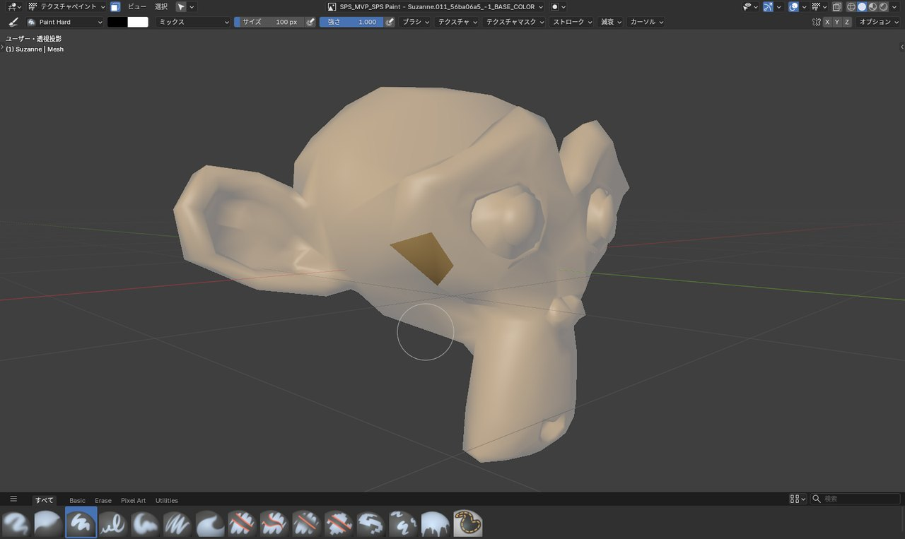
試す前に UV境界のあるメッシュで試す。PSDの対応範囲は別の保存例で確認する。
1. このアドオンでできること
PSD などのレイヤー付き画像を、Blender の中でレイヤーごとに描いて保存できるペイント用アドオンです。
- 画像を開かなくても、ボタン 1 つで描くための材質と無地のレイヤーを用意して、すぐ描けます。
- PSD／PSB を開き、レイヤーの構造を保ったまま、選んだレイヤーだけに Blender のブラシで描けます。
- PNG などの普通の画像も、1 枚のペイントレイヤーとして開いて描けます。
- ペイントレイヤー・調整レイヤーの追加、削除、上下の移動、グループ化、表示の切り替えができます。
- 3D ビューでは全レイヤーを重ねた見た目（ライブ合成）を見ながら、選んだレイヤーに描けます。
- レイヤーごとに不透明度・合成モード・クリッピング・マスクを設定できます。
- 調整レイヤーで、「明るさ / コントラスト」「レベル」「色相 / 彩度 / 明度」「カラーバランス」「反転」「ポスタライズ」「しきい値」「グラデーションマップ」を、元の絵を変えずにかけられます。
- 画像エディターで、矩形・楕円・投げ縄・多角形の選択範囲を作り、その中だけに描いたり塗りつぶしたりできます。
- 塗りつぶし、グラデーション、消去、コピー・貼り付け、移動・拡大縮小・回転・反転ができます。
- Blender のブラシ資産を選び、GIMP の GBR ブラシを読み込めます。
- カラーパレットを作る・GPL ファイルや画像から読み込む・調和色（補色など）で作ることができます。
- UV 島やメッシュ島の単位で面マスクを広げ、名前を付けて保存・読み込みできます（3D ビュー）。
- RGBA の分解・合成、反転・回転、エッジパディング、タイル境界ブレンド、ノーマルマップの変換、SDF 生成を、新しい画像として作れます（画像エディター）。
- Photoshop または Clip Studio Paint と画像をやり取りできます。
- 何もない 3D の物に、ボタン 1 つで描く準備をして下塗りする。
- キャラクターの PSD テクスチャを Blender に読み込み、3D の物を見ながら一部のレイヤーだけ描き足す。
- 肌の色味だけを調整レイヤーで変えて、元の絵は残したまま比べる。
- 服の UV 島だけに面マスクをかけて、はみ出さずに塗る。
- ノーマルマップの OpenGL／DirectX の向きを変換する。
- 描いている途中の画像を Photoshop や Clip Studio Paint で開いて手直しする。
ひと目で分かる例
このアドオンを使うと、画面は次のように変わります。くわしい操作は 5 章の各機能の「実例」で説明します。
実例切り替えから塗りつぶしまで 3 手（スザンヌで試した様子）
ブラシで塗らなくても、選んだ色でレイヤー全体（選択範囲があればその中だけ）を一度に塗れます。下塗りに便利です。切り替えた時に用意される無地のレイヤーに、そのまま塗れます。
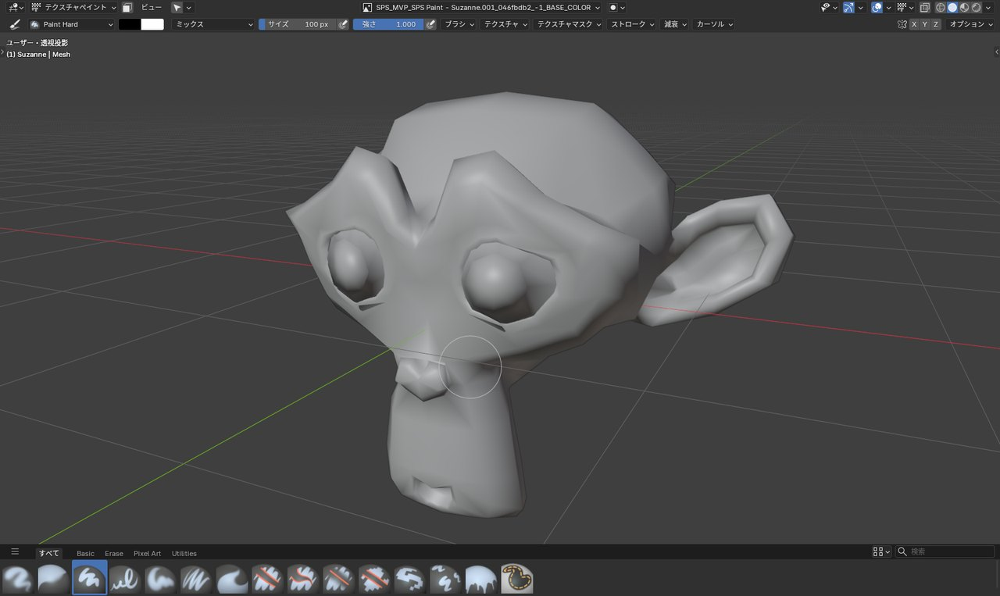
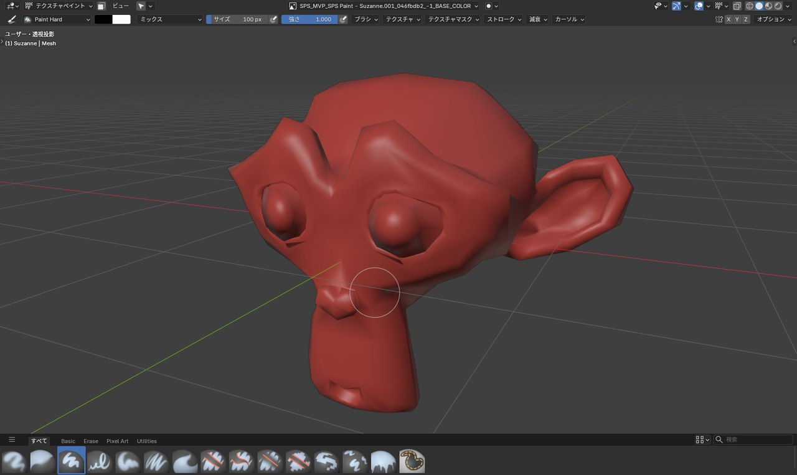
- 「Smart Paint」タブ ＞「ドキュメント」で「ペイント用マテリアルへ切替」を押す
- 「描画」を開き、色の欄で赤を選ぶ
- 「塗りつぶし」（色のアイコン）を押す
見どころ：無地の灰色だったレイヤーが、一度で全体まで赤く塗られました。レイヤーを足す必要はありません。
実例選んだ面からつながる部品だけを選ぶ「メッシュ島へ拡張」（スザンヌで試した様子）
面マスクを使うと、選んだ面にだけ塗れます。「メッシュ島へ拡張」は、選んだ 1 つの面から、形としてつながっている面まで選択を広げます。図は、選んだ所が見やすいようにオレンジ系で塗ってあります。
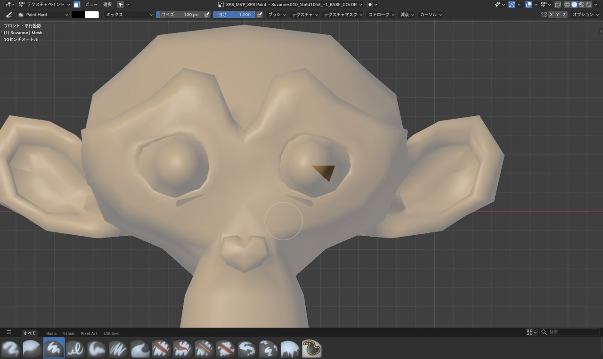
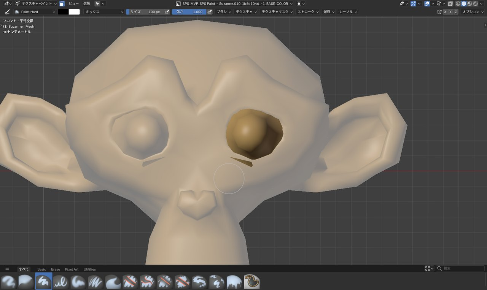
- テクスチャペイントモードで面マスクを有効にし、目の面を 1 つ選ぶ
- 「Smart Paint」タブ ＞「ペイント準備」を開く
- 「メッシュ島へ拡張」を押す
見どころ：1 つだけ選んでいた目の面から、目の玉全体（顔とはつながっていない部品）まで選択が広がりました（濃い色の所）。この後は目の玉にだけブラシが塗れ、顔にはみ出しません。
2. 目玉の機能
このアドオンならではの機能を、図に番号を付けて説明します。図の中の番号と、図の下の一覧の番号が対応しています。図を押すと大きく表示されます。設定の一つ一つは 5 章の各見出しで説明します。
2-1. PSD のレイヤーのまま描いて保存する（ドキュメント・レイヤー）いちばんの売り
Blender の中で、レイヤーを重ねて絵を描けます。PSD／PSB はレイヤーの構造を保ったまま開き、描いた後もレイヤーのまま PSD に保存できます（調整レイヤーも入ります）。描く時は、元のマテリアルのノードを変えずに描くためのマテリアルへ切り替え、終わったら元に戻せます。「ライブ」にすると、3D ビューで全部のレイヤーを重ねた見た目を見ながら、選んだ 1 枚に描けます。
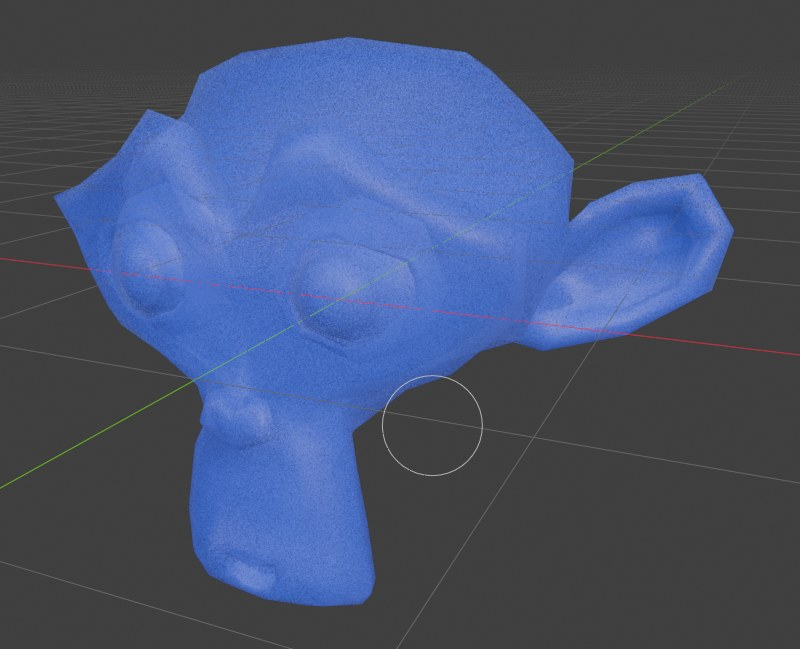
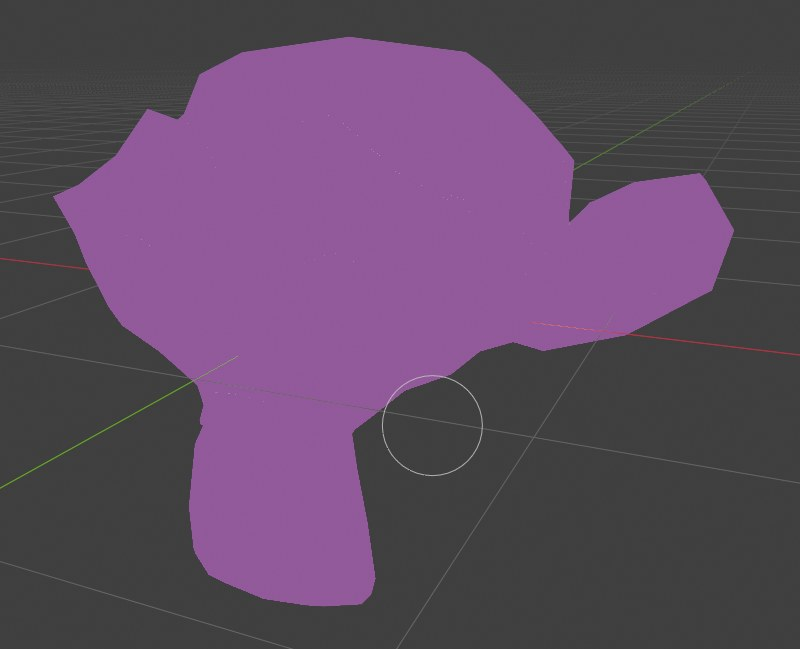
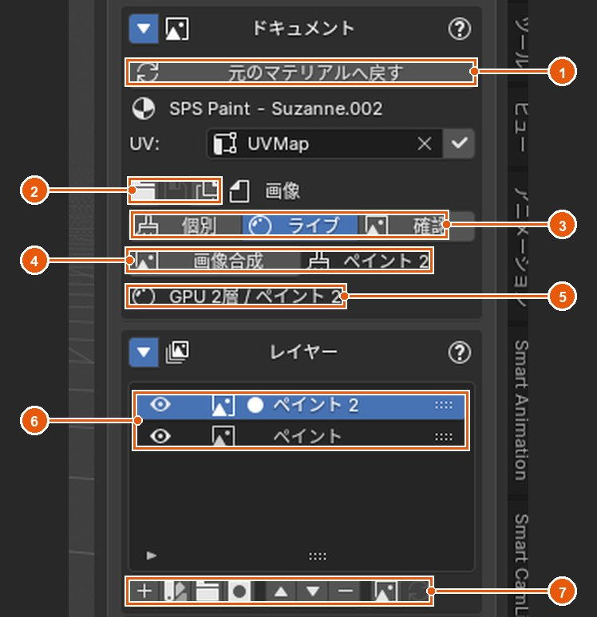
- 1元のマテリアルへ戻す：「ペイント用マテリアルへ切替」を押した後の表示。押すと元のマテリアル・UV・モードに戻る
- 2画像を開く / 画像を保存 / 画像を別名保存：フォルダー・フロッピーディスク・重なった四角のアイコン。PSD／PSB はレイヤーの構造のまま開いて、保存する
- 3個別 / ライブ / 確認：「個別」は選んだレイヤーだけ、「ライブ」は全部を重ねて表示（描くのは選んだレイヤー）。「確認」は正確に重ねた確認用で、描けない
- 4画像合成：「ライブ」の時だけ出る。押すと画像エディターも重ねた表示になる。右は描く先のレイヤーの名前
- 5今の状態：重ねている層の数と描く先のレイヤー（「GPU 2層 / ペイント 2」）。保存した後は、かかった時間も出る
- 6レイヤーの一覧：押したレイヤーが描く先になる。目のアイコンで表示・非表示、右端のつまみをドラッグして並べ替え
- 7レイヤーの操作：左から、ペイントレイヤーを追加（＋）・調整レイヤーを追加・グループ化・マスク・1 段上へ / 下へ・削除（－）・サムネイル
- 描きたい物を選び、「Smart Paint」タブの「ドキュメント」で「ペイント用マテリアルへ切替」を押す（押すと ① に変わる）。PSD がある時は ② のフォルダーのアイコンで開く。
- ⑦ の ＋ でレイヤーを足し、⑥ の一覧で描く先を選んで、ブラシで描く。
- ③ の「ライブ」で、全部のレイヤーを重ねた見た目を確かめながら描く。
- ② の重なった四角のアイコン（「画像を別名保存」）で、名前の最後を .psd にして保存する。次からはフロッピーディスクのアイコンで上書きできる。
- 「ペイント用マテリアルへ切替」は、UV マップが無い物では使えない。
- 「画像を保存」は、元のファイルが無いと押せない。PSD／PSB で別名保存すると、その PSD が元のファイルになる。PNG などで別名保存すると、重ねた結果のコピーを書き出すだけになる。
- 元のファイルが無い文書（切り替えて作った物）は、.blend を保存するとその中に残る。
- 別の物に移った時は、ブラシで描く前に、一覧でレイヤーを選び直す。
くわしい設定：5-2. ドキュメント、5-3. レイヤー
2-2. 元の絵を変えずに色味を変える（調整レイヤー）図で見る
調整レイヤーは絵を持たず、下のレイヤーの見え方だけを変えるレイヤーです。「色相 / 彩度 / 明度」など 8 種類があり、値はあとから何度でも変えられます。非表示にすれば元の色に戻るので、絵を塗り直さずに色味を試せます。PSD に保存すると調整レイヤーも入り、開き直しても保存した値のまま続きを作業できます。
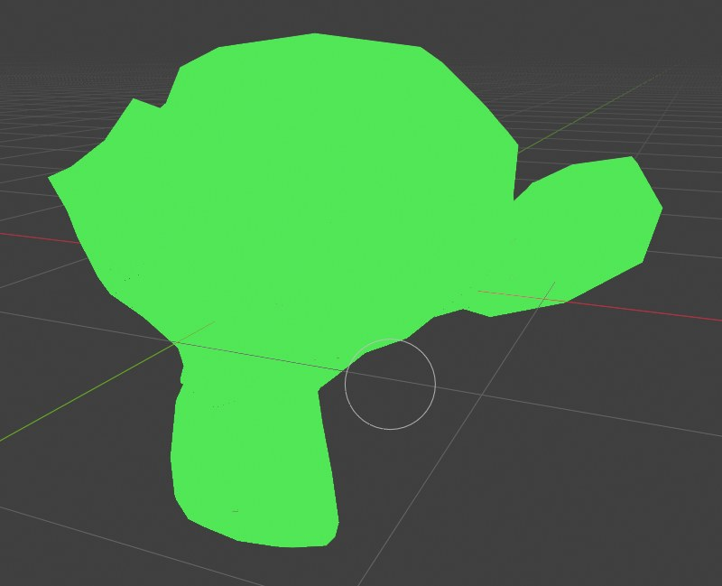
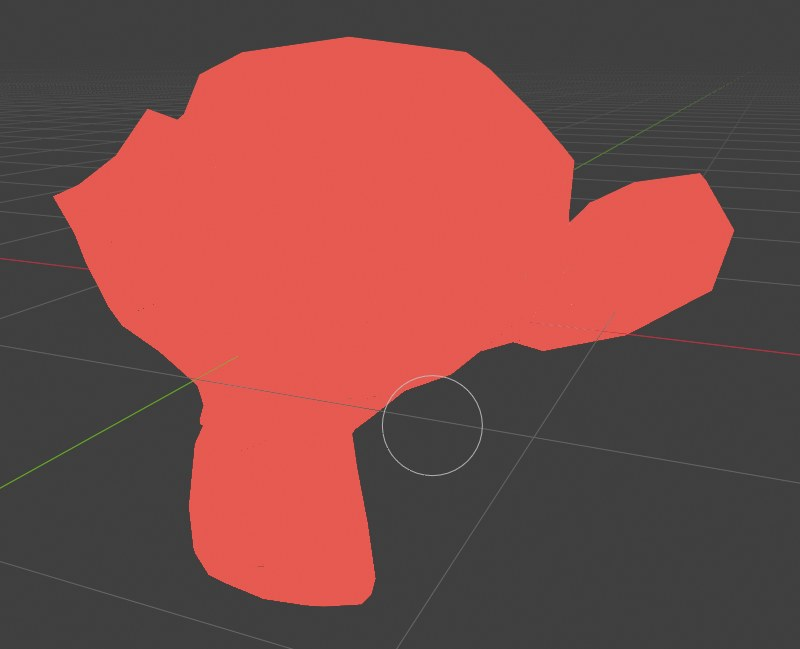
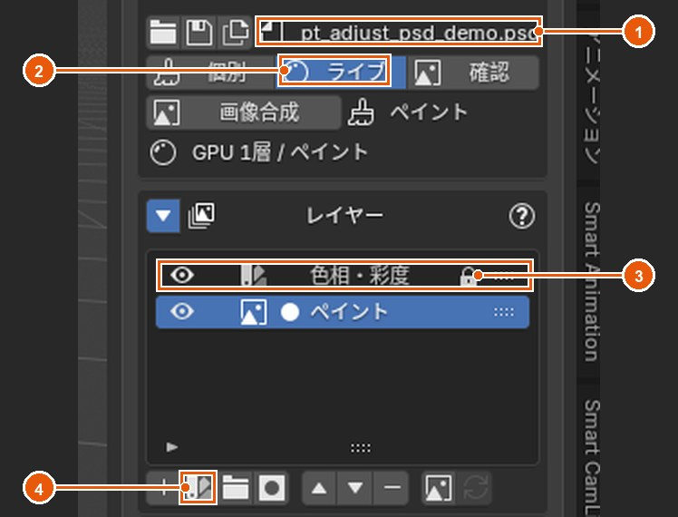
- 1ファイル名の欄：開いている PSD の名前。別名保存した PSD が元のファイルになり、続きを上書き保存できる
- 2ライブ：調整をかけた見た目を 3D ビューに出す。値を変えた後は、もう一度押す
- 3「色相・彩度」（調整レイヤー）：開き直しても残る。鍵のアイコンは、直接描けないレイヤーの印
- 4調整レイヤーを追加：押すと「種類」を選ぶ画面が出て、選んでいるレイヤーの上に足す
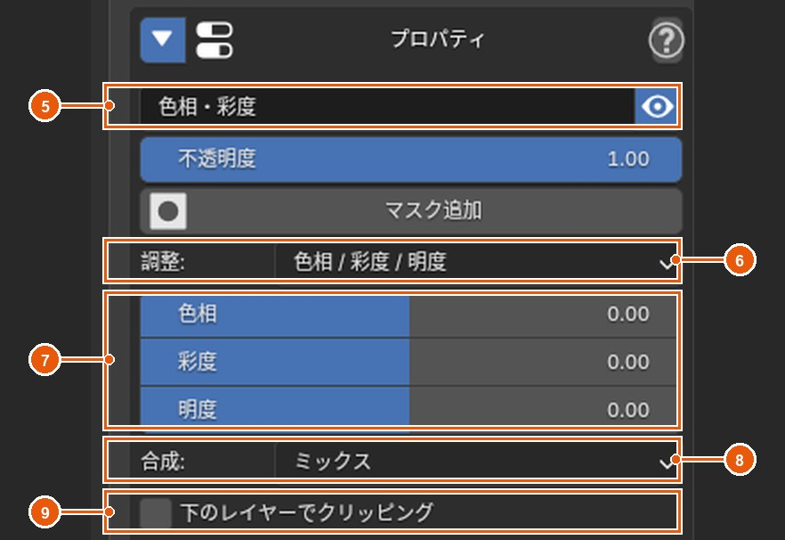
- 5名前の欄と目のアイコン：目のアイコンで非表示にすると、元の色に戻る（2 枚目の図）
- 6調整：調整の種類。「色相 / 彩度 / 明度」を選ぶと、下に「色相」「彩度」「明度」が出る
- 7色相 / 彩度 / 明度：「色相」は -1〜1 で、1 で色相が 180 度回る。0.66（約 120 度）で赤が緑に見える
- 8合成：下のレイヤーとの重ね方（合成モード）を選ぶ
- 9下のレイヤーでクリッピング：すぐ下のレイヤーの描かれている所だけに効かせる
- 色を変えたい絵のレイヤーを、一覧で選ぶ。
- ④ の色のアイコン（「調整レイヤーを追加」）を押し、「種類」で「色相 / 彩度 / 明度」などを選んで OK を押す。
- 「プロパティ」を開き、⑦ の値を動かす。
- ② の「ライブ」を押して見た目を確かめる。値を変えた後は、もう一度押す。
- PSD に別名保存すると、調整レイヤーも入る。
- 調整レイヤーは絵を持たないので、ブラシでは描けない（一覧に鍵のアイコンが付く）。
- 種類は 8 つ：「明るさ / コントラスト」「レベル」「色相 / 彩度 / 明度」「カラーバランス」「反転」「ポスタライズ」「しきい値」「グラデーションマップ」。
- 調整レイヤーは、ペイントレイヤーが 1 枚だけの時でも「レイヤーを削除」（－）で消せる。
- PNG などで別名保存すると、重ねた結果のコピーを書き出すだけになる。調整レイヤーを残すなら PSD／PSB で保存する。
くわしい設定：5-7. プロパティ、5-3. レイヤー
2-3. 選んだ範囲の中だけを塗る（選択範囲・描画）図で見る
画像の一部を選んで、ブラシ・塗りつぶし・消去・グラデーション・変形を、その中だけに効かせます。範囲は、画像エディターで矩形・楕円・投げ縄・多角形の形を選び、画像の上をドラッグして作ります。「追加」「削除」「交差」で今の範囲と組み合わせられるので、離れた何か所かも 1 つの範囲にして、まとめて塗れます。3D の物では、範囲に UV が重なっている面だけに色が付きます。
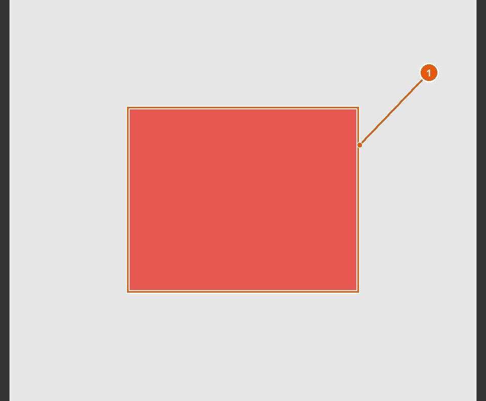
- 1選んだ範囲：範囲の中だけが赤くなる。外の灰色はそのまま
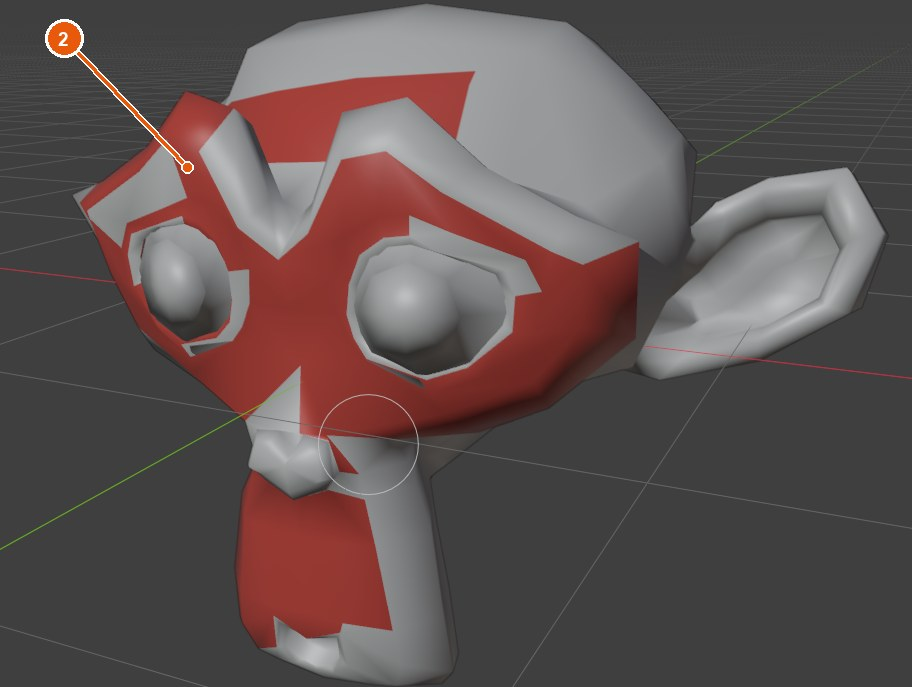
- 2範囲に当たる面：UV が選んだ範囲に重なっている面だけが赤くなる

- 31 か所目（左下）：「置換」で選んで赤で塗った所。右上を足して青で塗ると、一緒に青くなる
- 4足した所（右上）：「追加」を選んでから作ると、今の範囲に足される
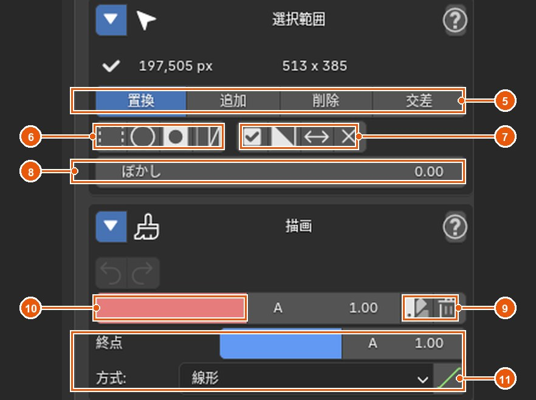
- 5置換 / 追加 / 削除 / 交差：次に作る範囲を、今の範囲とどう組み合わせるか。「追加」は足す、「削除」は引く、「交差」は重なった所だけ残す
- 6選択範囲を作成：矩形・楕円・投げ縄・多角形。形を選んで、画像の上をドラッグする
- 7すべて選択 / 不透明部分を選択 / 反転 / 解除：画像全体を選ぶ・描いてある所を選ぶ・選ぶ所を入れ替える・範囲を消してレイヤー全体に戻す
- 8ぼかし：範囲の境目を、内側へなめらかにぼかす幅
- 9塗りつぶし / 消去：範囲の中（範囲が無ければレイヤー全体）を、左の色で塗る / 透明にする
- 10色の欄・A：塗る色と、その不透明さ（A）。グラデーションの始めの色にもなる
- 11終点 / 方式 / グラデーション：グラデーションの終わりの色と形（線形・放射・角度・反射・ダイヤ）。右端のボタンを押してから、画像の上をドラッグする
- 画像エディターのサイドバーの「Smart Paint」タブで、「選択範囲」を開く。
- ⑥ で形を選び、画像の上をドラッグして範囲を作る。
- 離れた所も塗る時は、⑤ で「追加」を選んでから、もう一度ドラッグする。
- 「描画」の ⑩ で色を選び、⑨ の「塗りつぶし」を押す。
- 終わったら、⑦ の右端の「選択を解除」（×）でレイヤー全体に戻す。
- 選択範囲は PSD には保存されない。
- Blender 標準の選択とは別のもの。範囲を作る操作は、画像エディターの「Smart Paint」タブから始める。
- 「変形」（移動・拡大縮小・回転・反転）も、範囲があればその中の絵だけに効く。
- 「多角形」はクリックで点を足し、Enter・Space・ダブルクリックか最初の点のクリックで確定する。Esc で取り消す。
3. 準備
アドオンの入れ方・画面を日本語にする方法・N パネルと「？」ヘルプの共通の使い方は、「SmartTools 全体仕様書」にまとめています。先にそちらの 2〜5 章を読んでください。
| 入れる ZIP | SmartPaintSuite_1.0.0.zip |
|---|---|
| Blender の画面での名前 | Smart Paint |
| 動く Blender | 5.1.2 |
4. 画面の場所
3D ビューと画像エディター（UV エディターを含む）の N パネル（サイドバー）にある「Smart Paint」タブの中にあります。タブを開くと、いちばん上に「スマートペイント」という見出しが出て、その下に機能ごとの見出しが並びます。ノードエディターなど、ほかのエディターにも同じタブが出ます。ただし「レイヤー」「選択範囲」「描画」「変形」「プロパティ」の中は「3Dビュー・画像・UVエディターで使えます」と表示されて使えません。
| 出る画面 | 3D ビュー、画像エディター／UV エディター、そのほかのエディター（ノードエディター・ドープシート・テキストエディターなど。描画に関する見出しは使えません） |
|---|---|
| タブ | Smart Paint |
| モード | 見るだけならオブジェクトモードで構いません。実際に描くときは Blender 標準のテクスチャペイントモードを使います。「ペイント用マテリアルへ切替」を押すと、このモードに入ります。 |
- N パネルの開き方は、全体仕様書の該当の章を見てください。
- 3D ビューでメッシュ（形のある物）を 1 つ選びます。
- N パネルの「Smart Paint」タブを押します。
- 見出し（「ドキュメント」「レイヤー」など）を押すと、その中身が開きます。もう一度押すと閉じます。
- 見出しの右の「？」を押すと、その見出しの説明が出ます。
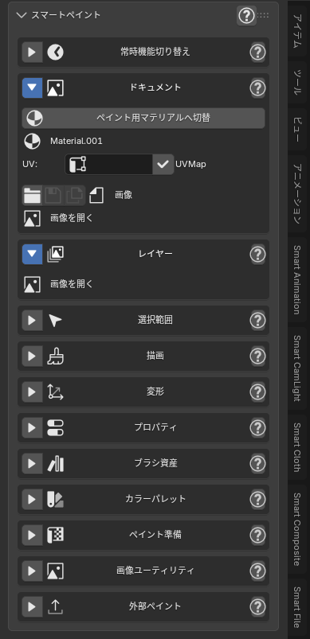
5. 機能の説明
画面の上から順に、見出しごとに説明します。見出しの右の「？」を押すと、同じ内容の説明が画面にも出ます。青い枠の「実例」は、スザンヌなどの簡単なモデルで実際に操作し、3D ビューでの変化を前と後で並べたものです。
5-1. 常時機能切り替え
ボタンを押した時以外にも動く処理を、ON／OFF で管理します。開くと4 つの切り替えが並びます。すべて OFF にすると、何もしていない時に裏で繰り返し動く処理がなくなります。最初は閉じています。
場所Smart Paint タブのいちばん上の見出し
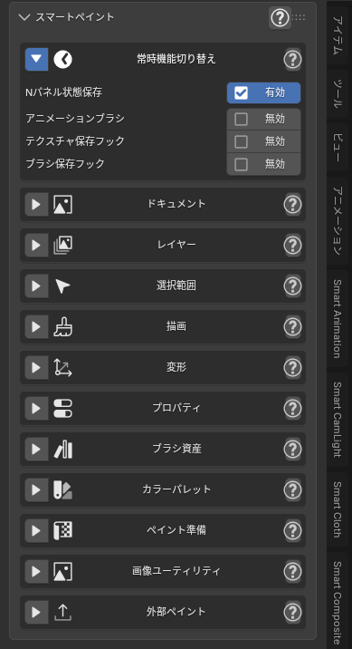
| 表示 | 働き |
|---|---|
| Nパネル状態保存 | ON の間、N パネルの見出しの開閉などの状態を SmartPaint Suite の設定ファイルに保存します。OFF にすると、もう一度 ON にするまで保存しません。最初は ON です。 |
| アニメーションブラシ | ON にすると、描く操作を見て、連番画像（画像シーケンス）のブラシのテクスチャを進めます。最初は OFF です。 |
| テクスチャ保存フック | ON にすると、.blend ファイルを保存した時だけ、変更したテクスチャ画像も書き出します。最初は OFF です。 |
| ブラシ保存フック | ON にすると、.blend ファイルを保存した後に、Blender のブラシの設定を SmartPaint Suite のプリセット（JSON ファイル）として保存します。最初は OFF です。 |
5-2. ドキュメント
描く画像（ドキュメント）を開く・保存する、見え方を切り替える、今の状態を確かめる、ための見出しです。ユーザーの元のマテリアル（材質の設定）のノードは変えません。最初から開いています。「個別」「ライブ」「確認」の切り替えは、画像を開くか、ペイント用マテリアルへ切り替えると出ます。切り替えて作った文書のように元のファイルがない文書は、.blend を保存するとその中に残ります。別の物に移った時は、ブラシで描く前に「レイヤー」の一覧でレイヤーを選び直してください。
場所「常時機能切り替え」の下
| 表示 | 働き |
|---|---|
| ペイント用マテリアルへ切替 | 今のマテリアルを保存したまま、選んだ物だけを SmartPaint Suite 用のマテリアルに切り替えます。レイヤーが無ければ無地のペイントレイヤーを 1 枚用意し、テクスチャペイントモードに入るので、すぐ描けます。UV マップが無い物では使えません。切り替えた後は「元のマテリアルへ戻す」に変わります。 |
| 元のマテリアルへ戻す | 元のマテリアルの割り当て、UV、モードなどを元に戻します。 |
| マテリアル名の欄 | 今のマテリアルの名前です（図では「Material.001」）。マテリアルが無い時は「マテリアルなし」と出ます。 |
| UV | 描くときに使う UV マップ（3D の面と画像の位置の対応表）を選びます。欄を空のままにすると、右に今使っている UV マップの名前（図では「UVMap」）が出ます。チェックのボタン（「描画UVを適用」）で、選んだ UV をテクスチャペイントと表示に反映します。UV マップが無い物では「UVマップがありません」と出ます。 |
| 画像を開く（フォルダーのアイコン） | 画像を開きます。PSD／PSB はレイヤーの構造を保って開き、そのほかの画像は 1 枚のペイントレイヤーとして開きます。切り替えた時に用意された無地のレイヤーは、開いた画像のレイヤーに置き換わります。マテリアルの付いたメッシュを選んでいないと、このボタンは出ず「メッシュのマテリアルを選択」と出ます。 |
| 画像を保存（フロッピーディスクのアイコン） | 元のファイルへ上書き保存します。PSD／PSB はレイヤーの構造を保ち、そのほかの形式は全レイヤーを重ねた結果を保存します。元のファイルがない時は押せません。まず「画像を別名保存」でファイルにします。 |
| 画像を別名保存（重なった四角のアイコン） | 別の名前で保存します。PSD／PSB はレイヤーの構造（調整レイヤーを含む）を保ち、その PSD が文書の元のファイルになるので、続きを上書き保存できます。PNG などのそのほかの形式は、今の重ねた結果のコピーを書き出すだけで、文書の元のファイルにはなりません。 |
| ファイル名の欄 | 開いている画像のファイル名です。元のファイルがない時は「画像」と出ます。画像を開くか切り替えるまでは、その下に「画像を開く」と表示されます。 |
| 個別 | 画像を開くか切り替えると出ます。3D ビューと画像エディターに、選んでいるレイヤーだけを表示します。 |
| ライブ | 3D ビューでは全レイヤーを重ねて表示し、画像エディターとブラシは選んでいるレイヤーのままにします（ライブ合成）。3D ビューは影のない平らな色になり、面の境に白い点が少し出ることがあります。使えない時は理由の文が出て、「個別」に戻ります。 |
| 確認 | 今見えている全レイヤーを正確に重ねた、確認用の一時的な画像を作って表示します。この状態は見るだけで、描けません（「全体確認（閲覧専用）」と出ます）。右の更新のボタンで作り直します。 |
| 画像合成 | 「ライブ」の時だけ出ます。押すと画像エディターも全レイヤーを重ねた表示になります。ブラシは選んでいるレイヤーにだけ描きます。右に、ブラシの描く先のレイヤーの名前が出ます。 |
| 今の状態の行（「個別」「ライブ」「確認」の下） | 描いているレイヤーの名前が出ます（「ペイント 2」など）。「ライブ」の時は「GPU 2層 / ペイント 2」のように、重ねている層の数も出ます。「確認」の時は「全体確認（閲覧専用）」、マスクを描いている時は「マスク: 」とレイヤーの名前が出ます。保存した後は、右に前回の保存にかかった時間が出ます（「2.9s」は 2.9 秒です）。 |
実例描くための材質に切り替える「ペイント用マテリアルへ切替」（スザンヌで試した様子）
今の材質を残したまま、描くための画像付きの材質に切り替えます。無地のペイントレイヤーが 1 枚用意され、テクスチャペイントモードに入るので、すぐに描けます。描き終わったら「元のマテリアルへ戻す」で戻せます。
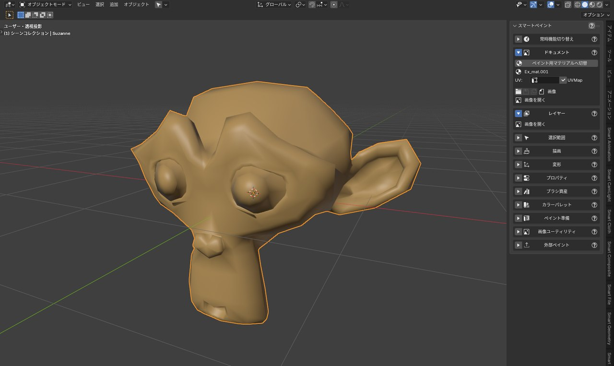
- スザンヌを選ぶ
- 「Smart Paint」タブ ＞「ドキュメント」を開く
- 「ペイント用マテリアルへ切替」を押す
見どころ：オレンジ系の材質から、まだ何も描いていない無地の灰色の材質に変わりました。画面の上はテクスチャペイントモードになり、右のパネルのボタンは「元のマテリアルへ戻す」に変わって、「個別」「ライブ」「確認」と、用意された「ペイント」レイヤーが出ています。元の材質は消えずに保存されています。
実例全部のレイヤーを重ねて見る「ライブ」（スザンヌで試した様子）
「個別」は選んでいるレイヤーだけを表示します。「ライブ」は 3D ビューで全部のレイヤーを重ねて表示し、ブラシは選んでいるレイヤーに描いたままにします。
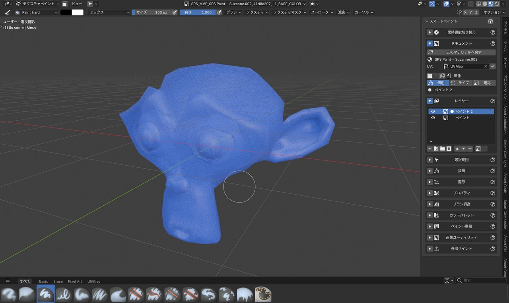
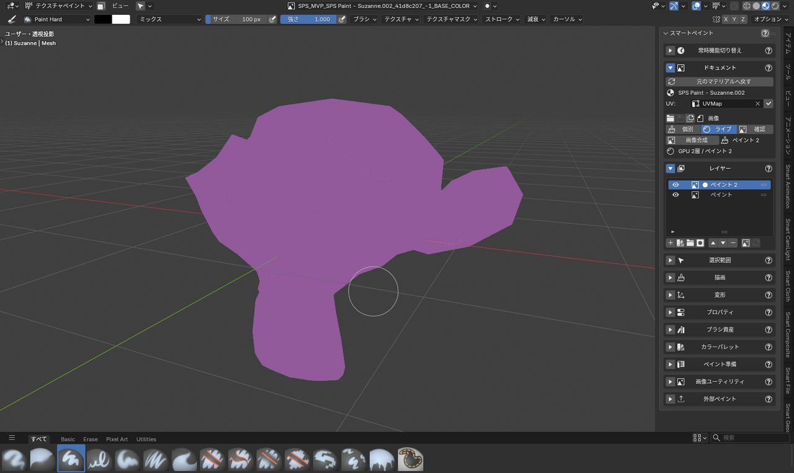
- 下のレイヤーを赤で塗りつぶす
- 「レイヤー」で「ペイントレイヤーを追加」（＋）を押す
- 「描画」で色を青、「A」を 0.5 にして「塗りつぶし」を押す
- 「ドキュメント」で「ライブ」を押す
見どころ：「個別」では上のレイヤーの半透明の青だけが見えています。「ライブ」にすると下の赤が透けて、紫に見えます。ライブの 3D 表示は影のない平らな色になります。
実例切り替えて描いた絵を PSD に保存する「画像を別名保存」（スザンヌで試した様子）
切り替えて作った絵には元のファイルがありません。別名保存で PSD にすると、その PSD が元のファイルになり、続きを描いて上書き保存できます。
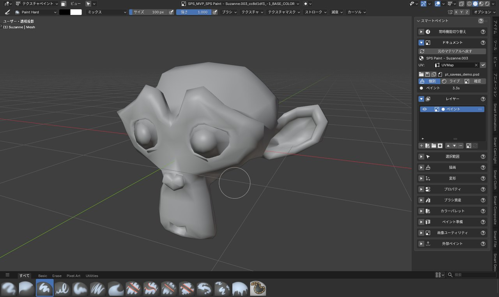
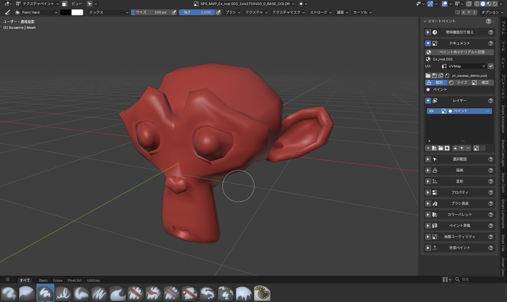
- 「ペイント用マテリアルへ切替」を押す
- 重なった四角のアイコン（「画像を別名保存」）を押し、名前の最後を .psd にして保存する
- 「描画」で赤を選んで「塗りつぶし」を押す
- フロッピーディスクのアイコン（「画像を保存」）で上書き保存する
- 別の時に、フォルダーのアイコン（「画像を開く」）でその PSD を開く
見どころ：保存した後に塗った赤が PSD に入っています。一度元の材質（オレンジ系）に戻してから PSD を開いても、同じ赤で出ます。
実例調整レイヤーごと PSD に保存する「画像を別名保存」「画像を保存」（スザンヌで試した様子）
調整レイヤーも PSD に入ります。値を変えて上書き保存でき、開き直すと保存した値のまま続きを作業できます。
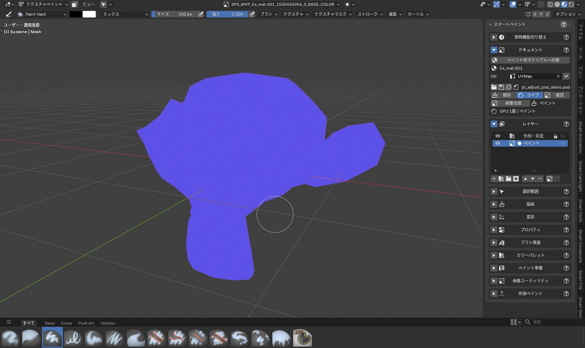
- 「描画」で赤を選んで「塗りつぶし」を押す
- 色のアイコン（「調整レイヤーを追加」）で「色相 / 彩度 / 明度」を足し、「プロパティ」の「色相」を 0.66 にする
- 重なった四角のアイコン（「画像を別名保存」）を押し、名前の最後を .psd にして保存する
- 「色相」を -0.66 にして、フロッピーディスクのアイコン（「画像を保存」）で上書き保存し、「ライブ」を押し直す
- 別の時に、フォルダーのアイコン（「画像を開く」）でその PSD を開き、「ライブ」を押す
見どころ：赤い絵のままで、緑→青と見え方だけが変わります。開き直しても、調整レイヤーと最後に保存した値（青）が残っています。
5-3. レイヤー
ペイントレイヤー・調整レイヤーの一覧と、追加・削除・並べ替え・グループ化・マスクの切り替えをします。画像を開くか、ペイント用マテリアルへ切り替えるまでは「画像を開く」とだけ出ます。最初から開いています。
場所「ドキュメント」の下
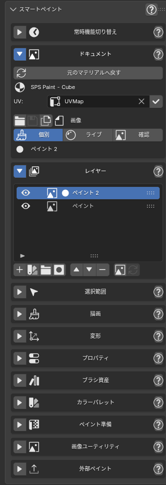
| 表示 | 働き |
|---|---|
| レイヤーの一覧 | 行を押すと、そのレイヤーを選びます。ピクセル（絵）のレイヤーは、そのままブラシで描く先になります。目のアイコンは「レイヤー表示切替」、グループの矢印は「グループを展開/折りたたみ」、右端のつまみは「レイヤーをドラッグ」（押したまま動かして並べ替え）です。鎖のアイコンはクリッピング、マスクのアイコンはマスクあり、鍵のアイコンは直接描けないレイヤーを表します。 |
| ペイントレイヤーを追加（＋） | 選んでいるレイヤーの上に、透明なペイントレイヤーを足します。 |
| 調整レイヤーを追加（色のアイコン） | 「種類」を選ぶ画面が出て、選んでいるレイヤーの上に調整レイヤーを足します。種類は「明るさ / コントラスト」「レベル」「色相 / 彩度 / 明度」「カラーバランス」「反転」「ポスタライズ」「しきい値」「グラデーションマップ」です。 |
| グループ化（フォルダーのアイコン） | 選んでいるレイヤーを、新しいグループに入れます。 |
| レイヤーマスクを編集／レイヤー描画へ戻る（マスクのアイコン） | 選んでいるレイヤーやグループのマスクを作って、ブラシの描く先をマスクにします（調整レイヤーには作れません）。マスクを描いている間は筆のアイコンに変わり、押すと元のレイヤーに描く状態に戻ります。 |
| レイヤーを移動（▲／▼） | 選んでいるレイヤーやグループを 1 段上・下に動かします。 |
| レイヤーを削除（－） | 選んでいるレイヤー（ペイントレイヤーまたは調整レイヤー）を削除します。押すと確認が出ます。グループは削除できません。文書に残っているペイントレイヤーが 1 枚だけの時、そのペイントレイヤーは「最後のペイントレイヤーは削除できません。」と出て消えません。調整レイヤーは、ペイントレイヤーが 1 枚でも消せます。 |
| レイヤーサムネイル（画像のアイコン） | 一覧に小さな絵（サムネイル）を出すかどうかを切り替えます。 |
| アクティブサムネイルを更新（更新のアイコン） | サムネイルが ON の時だけ押せます。今描いているレイヤーのサムネイルだけを作り直します。 |
5-4. 選択範囲
画像の一部を選んで、ブラシや編集の効く場所をその中だけにします。Blender 標準の選択とは別のものです。選択範囲を作る操作は、画像エディターの Smart Paint タブから始めます。選択範囲は PSD には保存されません。画像を開くか、ペイント用マテリアルへ切り替えるまでは「画像を開く」とだけ出ます。
場所「レイヤー」の下（最初は閉じています）
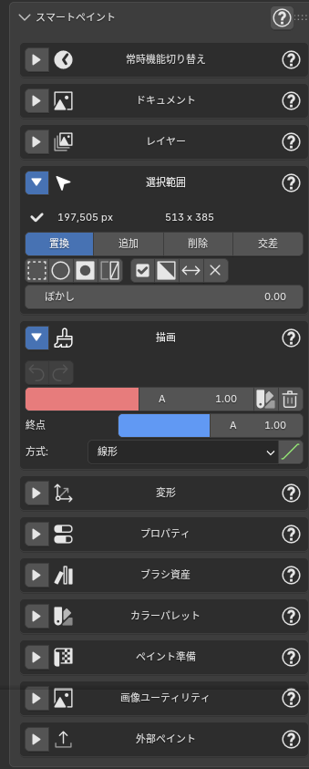
| 表示 | 働き |
|---|---|
| 選んでいるピクセル数と範囲の大きさ（チェックのアイコンと、図では「197,505 px」「513 x 385」） | 範囲がある時だけ、いちばん上の行に出ます。左が範囲に入っているピクセルの数、右が範囲の大きさ（幅 x 高さ、単位はピクセル）です。 |
| 置換／追加／削除／交差 | 新しく作る選択範囲を、今の選択範囲とどう組み合わせるかを選びます。「置換」は置き換え、「追加」は足す、「削除」は引く、「交差」は重なった所だけ残します。 |
| 選択範囲を作成（矩形・楕円・投げ縄・多角形の 4 つのアイコン） | 形を選んでから、画像エディターの画像の上でドラッグして選択範囲を作ります。「多角形」はクリックで点を足し、Enter・Space・ダブルクリックか最初の点のクリックで確定します。Esc で取り消します。 |
| すべて選択（チェックの入った四角のアイコン） | 画像全体を選びます。今の範囲は置き換わります。 |
| 不透明部分を選択（斜めに半分塗った四角のアイコン） | 選んでいるレイヤーの、透明でない部分を選びます。 |
| 選択範囲を反転（左右矢印のアイコン） | 選んでいる所と選んでいない所を入れ替えます。 |
| 選択を解除（×） | 選択範囲を消して、ブラシや編集をレイヤー全体に戻します。 |
| ぼかし | 選択範囲の境目を内側へなめらかにぼかす幅です。 |
実例選択範囲の中だけを塗る「選択範囲を作成」（スザンヌで試した様子）
画像エディターで四角い範囲を選んでから塗りつぶすと、その中だけが塗られます。3D の物では、その範囲に当たる面に色が付きます。
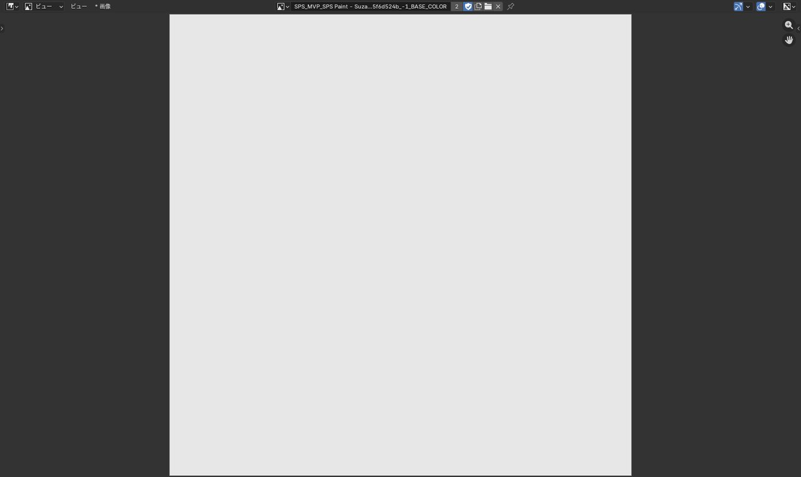
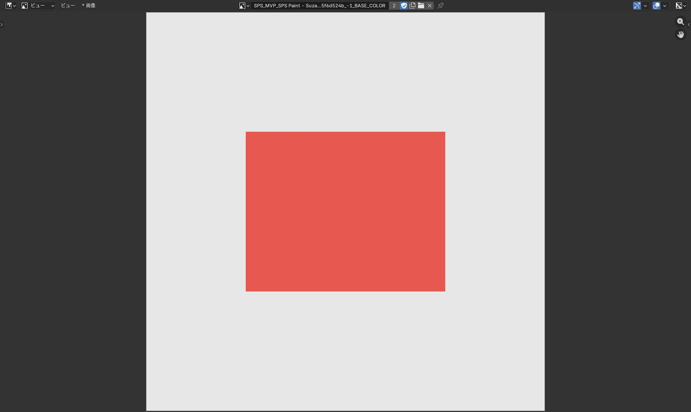
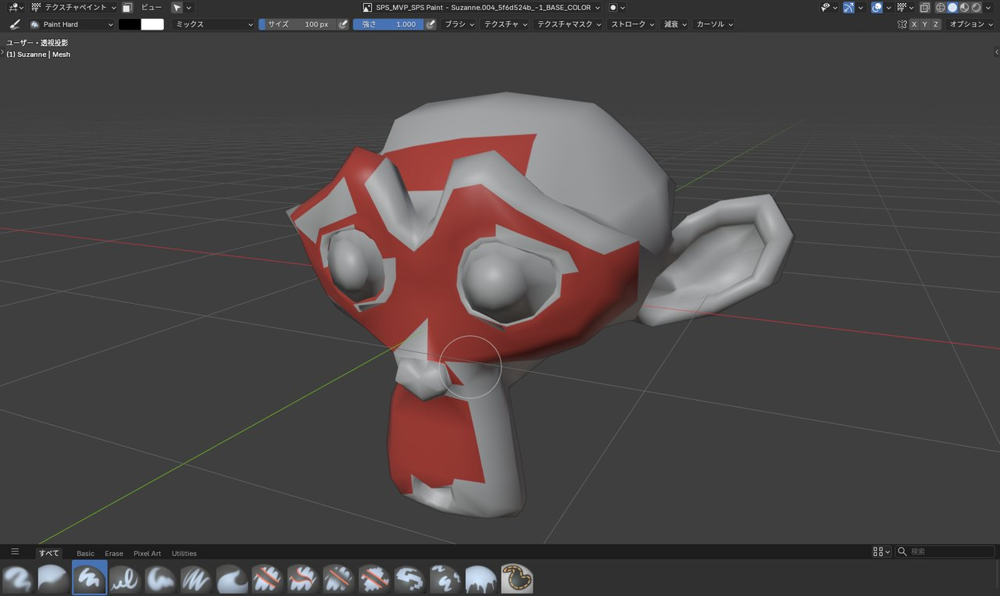
- 「ペイント用マテリアルへ切替」を押す
- 画像エディターの「Smart Paint」タブ ＞「選択範囲」を開く
- 矩形のアイコンを押し、画像の上をドラッグする
- 「描画」で赤を選んで「塗りつぶし」を押す
- 「選択を解除」（×）を押す
見どころ：画像の中の四角い範囲だけが赤くなりました。3D ビューで見ると、その範囲に UV が重なっている面だけが赤くなっています。
実例範囲を足して離れた所もまとめて塗る「追加」（スザンヌで試した様子）
「追加」を選んでから範囲を作ると、今の範囲に足されます。離れた 2 か所を 1 つの選択範囲にして、まとめて塗れます。チェックの入った四角のアイコンで、画像全体も選べます。
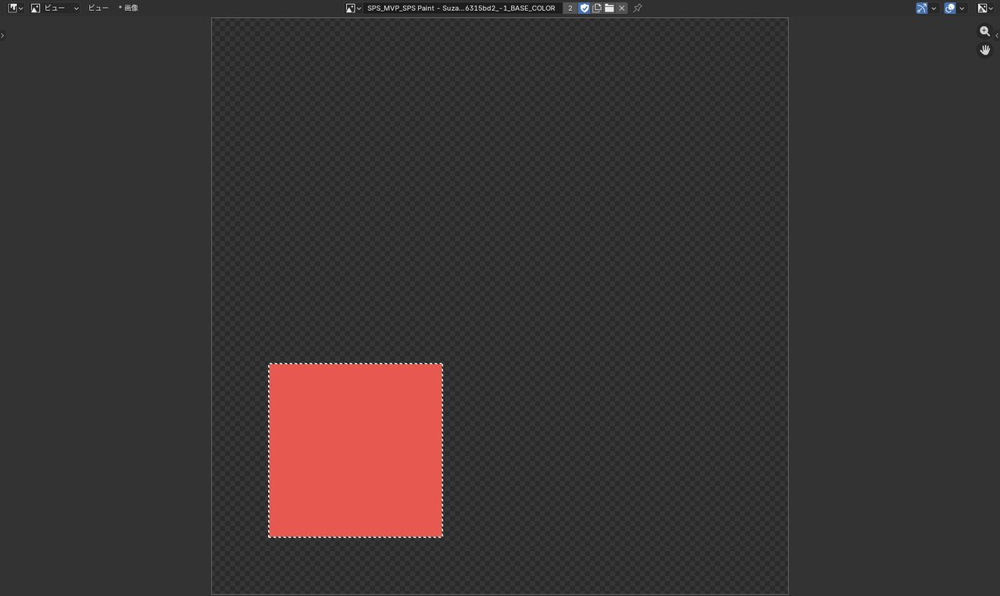
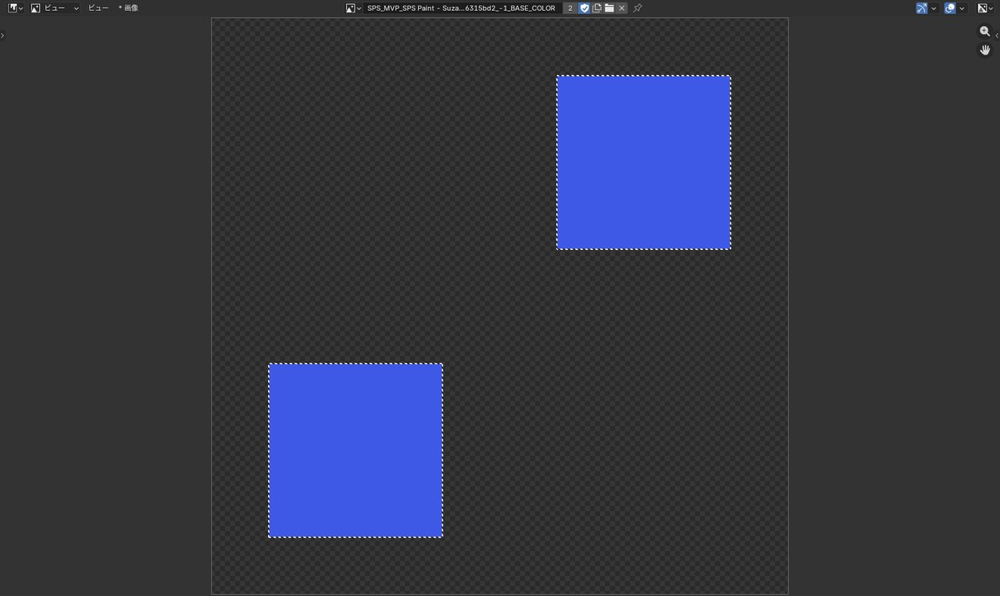
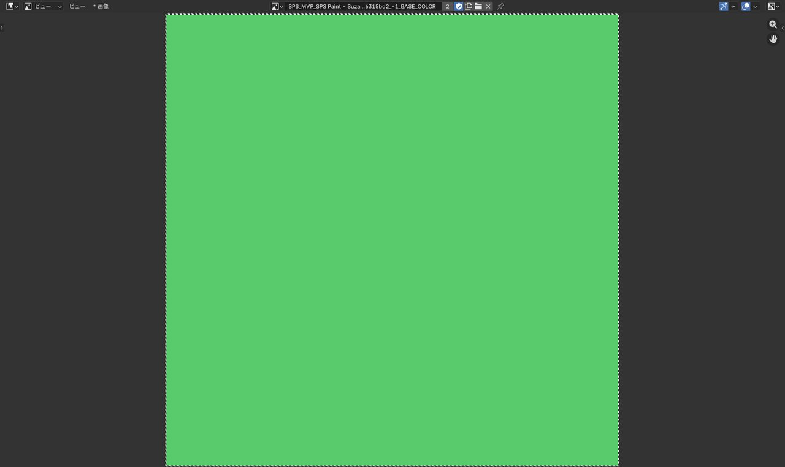
- 画像エディターの「Smart Paint」タブ ＞「選択範囲」を開く
- 「置換」のまま矩形のアイコンを押し、画像の上をドラッグする
- 「描画」で赤を選んで「塗りつぶし」を押す
- 「追加」を選び、矩形のアイコンで別の場所をドラッグする
- 「描画」で青を選んで「塗りつぶし」を押す
- チェックの入った四角のアイコン（「すべて選択」）を押し、緑で「塗りつぶし」を押す
見どころ：2 枚目の図では、前に選んだ左下と足した右上の両方が青くなりました。「追加」で 2 か所が 1 つの範囲になったためです。3 枚目は「すべて選択」の後で、画像全体が緑になりました。
5-5. 描画
選択範囲（無ければレイヤー全体）を、塗りつぶし・グラデーション・消去で一度に塗ります。ブラシで描く操作そのものは Blender 標準のテクスチャペイントを使います。画像を開くか、ペイント用マテリアルへ切り替えるまでは「画像を開く」とだけ出ます。
場所「選択範囲」の下（最初は閉じています）
| 表示 | 働き |
|---|---|
| 編集を元に戻す／編集をやり直す（矢印のアイコン） | 直前の SmartPaint Suite の編集（塗りつぶしなど）を元に戻す・やり直します。戻せる編集が無い時は押せません。 |
| 色の欄・A | 塗りつぶしの色と、その不透明さ（A）です。グラデーションの始めの色にもなります。 |
| 塗りつぶし（色のアイコン） | 選択範囲、またはレイヤー全体を、上の色で塗りつぶします。 |
| 消去（ごみ箱のアイコン） | 選択範囲、またはレイヤー全体を透明にします。 |
| 終点 | グラデーションの終わりの色と、その不透明さ（A）です。 |
| 方式 | グラデーションの形を「線形」「放射」「角度」「反射」「ダイヤ」から選びます。 |
| グラデーション（線のアイコン） | 画像エディターの Smart Paint タブで押した後、画像の上で始点から終点までドラッグして、選択範囲またはレイヤーにグラデーションを描きます。 |
実例切り替えから塗りつぶしまで 3 手（スザンヌで試した様子）
ブラシで塗らなくても、選んだ色でレイヤー全体（選択範囲があればその中だけ）を一度に塗れます。下塗りに便利です。切り替えた時に用意される無地のレイヤーに、そのまま塗れます。
- 「Smart Paint」タブ ＞「ドキュメント」で「ペイント用マテリアルへ切替」を押す
- 「描画」を開き、色の欄で赤を選ぶ
- 「塗りつぶし」（色のアイコン）を押す
見どころ：無地の灰色だったレイヤーが、一度で全体まで赤く塗られました。レイヤーを足す必要はありません。
5-6. 変形
選択範囲の中の絵（無ければレイヤー全体）を、移動・拡大縮小・回転・反転します。画像を開くか、ペイント用マテリアルへ切り替えるまでは「画像を開く」とだけ出ます。
場所「描画」の下（最初は閉じています）
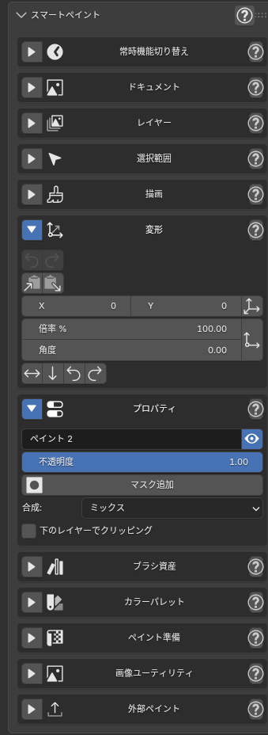
| 表示 | 働き |
|---|---|
| 編集を元に戻す／編集をやり直す | 直前の SmartPaint Suite の編集を元に戻す・やり直します。 |
| コピー／貼り付け | 選択範囲の絵（無ければレイヤーの透明でない部分）をコピーし、選んでいるレイヤーの同じ位置に貼り付けます。 |
| X・Y と移動のボタン | X・Y に入れたピクセル数だけ動かします。 |
| 倍率 %・角度と拡大縮小・回転のボタン | 「倍率 %」が大きさの割合で、100 が今の大きさです。「角度」は回す角度です。値を入れて、右のボタンを押すと、拡大縮小と回転をまとめて行います。 |
| 矢印のアイコン 4 つ（左右反転・上下反転・左へ90度・右へ90度） | 押すとすぐに反転・90 度回転します。軸は、描かれている絵のまとまり（選択範囲があればその中）の真ん中です。 |
実例描いた絵をあとから動かす「変形」（スザンヌで試した様子）
レイヤーの絵を、数を入れて移動したり、ボタン 1 つで反転したりできます。
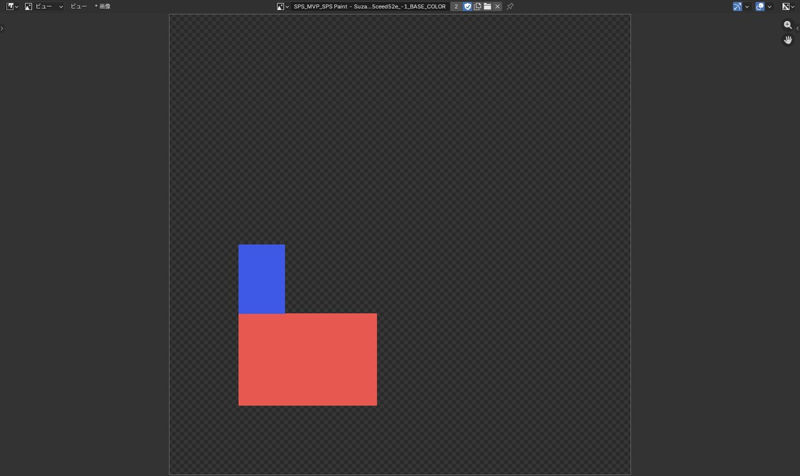
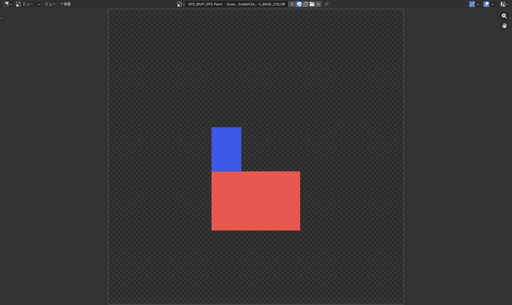
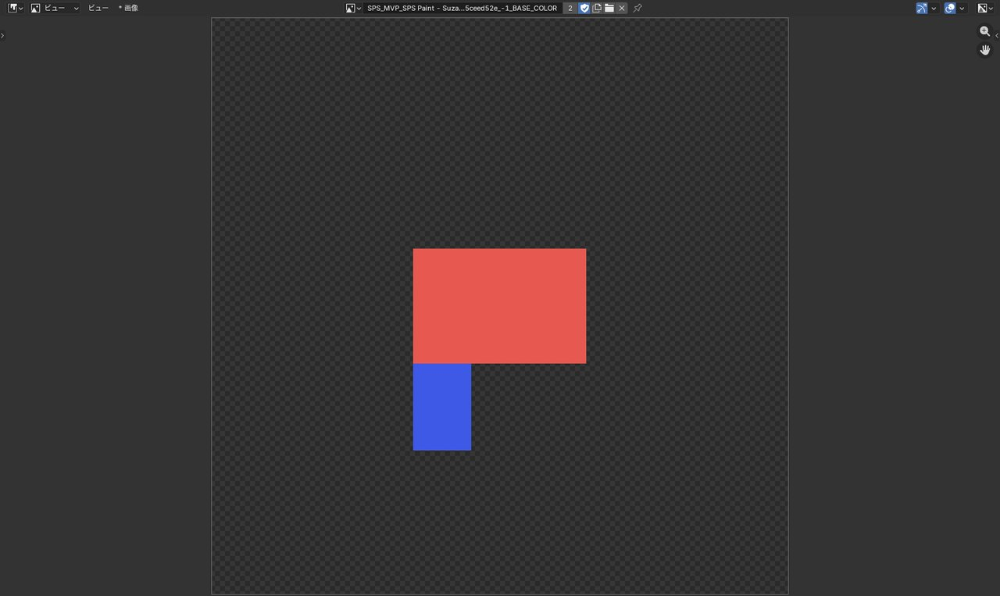
- 「描画」で絵を描いておく
- 「変形」を開く
- X・Y に動かす量を入れて、右の移動のボタンを押す
- 矢印のアイコンの「上下反転」を押す
見どころ：赤と青の絵が右上へ動き、次の「上下反転」で青が赤の下に移りました。反転と 90 度回転は、描かれている絵のまとまりの真ん中を軸にして、その場で行います。周りの透明な所はそのままです。
実例数を入れて縮めて回す「倍率 %」「角度」（スザンヌで試した様子）
「変形」の「倍率 %」と「角度」に値を入れて右のボタンを押すと、絵を縮めて回せます。
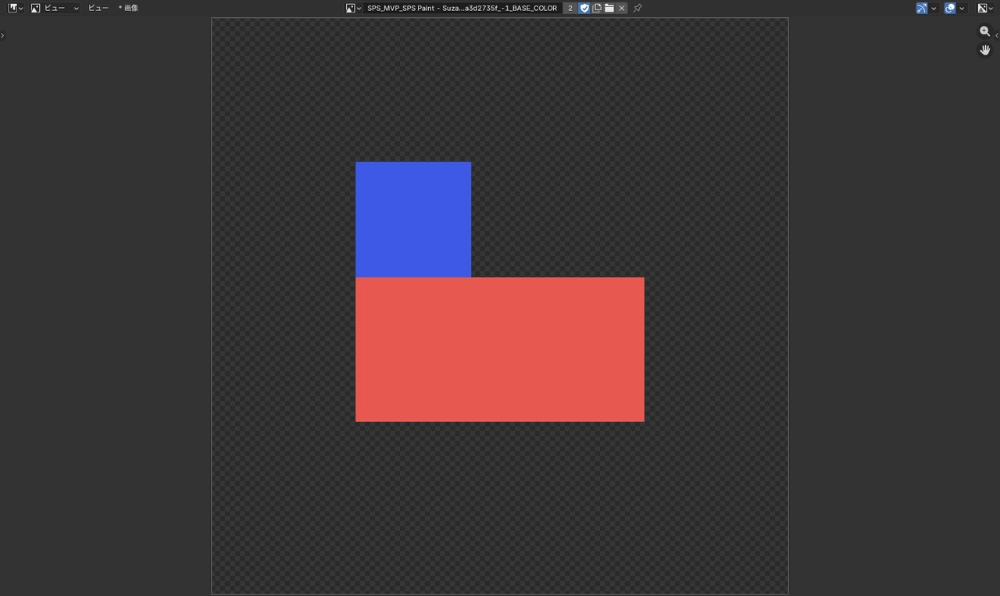
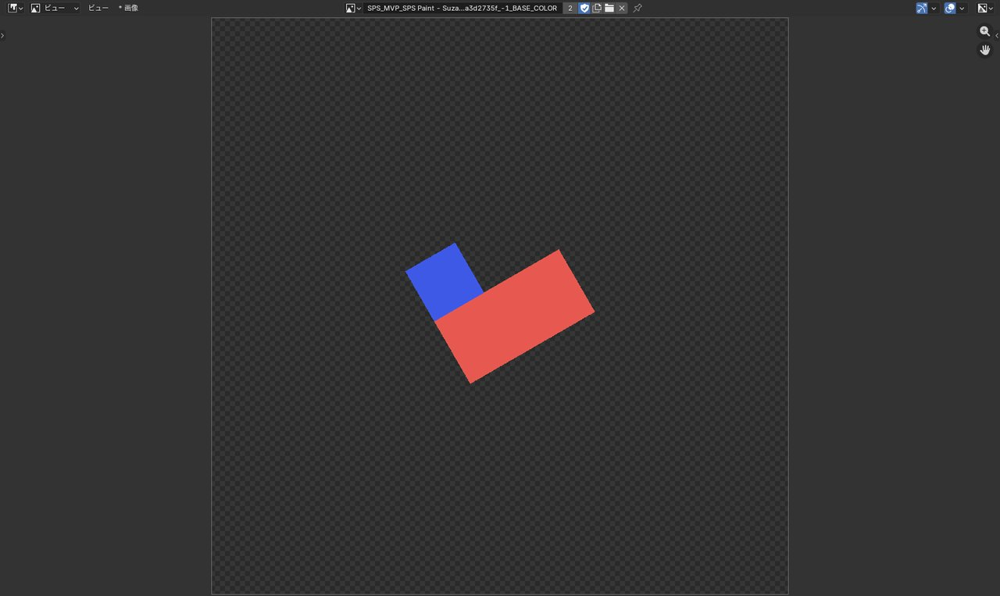
- 「描画」で絵を描いておく
- 「変形」を開く
- 「倍率 %」に 50、「角度」に 30 を入れる
- 2 つの欄の右のボタンを押す
見どころ：赤と青の絵が半分の大きさになり、30 度回りました。
5-7. プロパティ
選んでいるレイヤーの名前・表示・不透明度・マスク・合成モード・クリッピング・調整の値を変えます。レイヤーを選んでいないと「レイヤーを選択」と出ます。
場所「変形」の下（最初は閉じています）
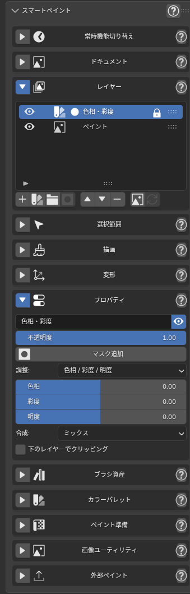
| 表示 | 働き |
|---|---|
| 名前の欄と目のアイコン | レイヤーの名前を変えます。目のアイコンで表示・非表示を切り替えます。 |
| 不透明度 | レイヤーの濃さです。 |
| マスク追加／マスク編集／ピクセル | マスクが無ければ「マスク追加」、あれば「マスク編集」で、マスクに描く状態にします。マスクを描いている間は「ピクセル」に変わり、押すと絵に描く状態に戻ります。 |
| 調整 | 調整レイヤーの時だけ出ます。種類を選ぶと、その種類の値が出ます。明るさ / コントラストは「明るさ」「コントラスト」、レベルは「入力黒」「入力白」「中間調」「出力黒」「出力白」、色相 / 彩度 / 明度は「色相」「彩度」「明度」、カラーバランスは「シャドウ」「中間調」「ハイライト」と「輝度を保持」、ポスタライズは「階調数」、しきい値は「しきい値」、グラデーションマップは「暗部」「明部」です。反転には値はありません（「下の合成結果のRGBを反転」と出ます）。「色相」は -1 から 1 の値で、1 で色相が 180 度回ります。 |
| 合成 | 下のレイヤーとの重ね方（合成モード）を選びます。グループの時は「グループ合成」になります。 |
| 下のレイヤーでクリッピング | すぐ下のレイヤーの描かれている所だけに、このレイヤーを表示します。絵そのものは変わりません。グループの時は出ません。 |
実例元の絵を変えずに色味だけ変える「調整レイヤー」（スザンヌで試した様子）
調整レイヤーは絵を持たず、下のレイヤーの見え方だけを変えます。「プロパティ」の値を動かして、「確認」で全体を見ます。
- 赤で塗りつぶしたレイヤーを選ぶ
- 「レイヤー」の色のアイコン（「調整レイヤーを追加」）を押し、「種類」で「色相 / 彩度 / 明度」を選んで OK を押す
- 「プロパティ」を開き、「色相」を動かす
- 「ドキュメント」で「確認」を押して全体を見る
- 一覧の目のアイコンで調整レイヤーを非表示にし、「確認」の右の更新のボタンを押す
見どころ：赤かった絵が、「色相」を動かすと緑に変わりました。調整レイヤーを非表示にすると元の赤に戻ります。絵そのものは変わっていません。
実例調整レイヤーの効果を「ライブ」で見る（スザンヌで試した様子）
調整レイヤーを足して「ライブ」を押すと、下のレイヤーの色に調整をかけた見た目が 3D ビューに出ます。値を変えた後は、もう一度「ライブ」を押すと見た目が更新されます。
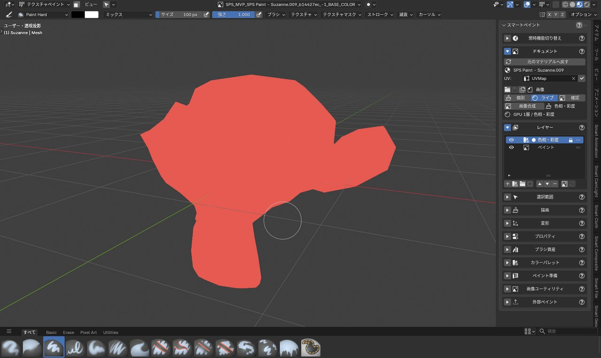
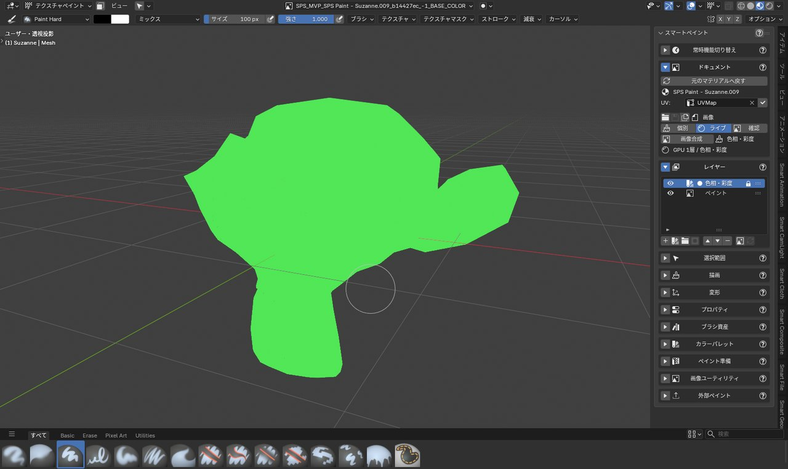
- 赤で塗りつぶす
- 「レイヤー」の色のアイコン（「調整レイヤーを追加」）を押し、「種類」で「色相 / 彩度 / 明度」を選んで OK を押す
- 「ドキュメント」で「ライブ」を押す
- 「プロパティ」で「色相」を 0.66 にする
- もう一度「ライブ」を押す
見どころ：調整レイヤーを足してすぐの「ライブ」でも、塗った赤のまま出ます。「色相」を 0.66（約 120 度）にして「ライブ」を押すと、緑に変わりました。
5-8. ブラシ資産
Blender 標準のブラシ資産（保存して使い回せるブラシ）を選び、GIMP の GBR ブラシを読み込みます。描くこと自体は Blender 標準のテクスチャペイントで行います。
場所「プロパティ」の下（最初は閉じています）
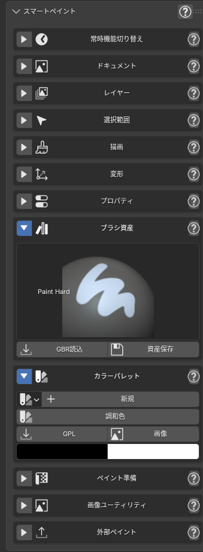
| 表示 | 働き |
|---|---|
| ブラシの絵と名前（ブラシの選択） | 今のブラシの絵（サムネイル）と名前です。押すと Blender 標準のブラシ資産の一覧が出て、使うブラシを選べます。図では「Paint Hard」が選ばれています。ブラシがまだ決まっていない時は出ません（テクスチャペイントモードにすると出ます）。 |
| GBR読込 | GIMP の GBR ブラシを、今のファイルのブラシ資産に変換して読み込みます。 |
| 資産保存 | 今のブラシを、ブラシ資産として保存します（Blender 標準の機能）。ブラシを選んでいないと押せません。 |
5-9. カラーパレット
色見本（パレット）を作る・読み込む、と、今の描く色（主色と副色）を変えます。
場所「ブラシ資産」の下（最初は閉じています）
| 表示 | 働き |
|---|---|
| パレットの選択欄・新規 | 使うパレットを選びます。「新規」で、今の描く色から新しいパレットを作ります。パレットを選んでいない時は、その下の段に「調和色」、さらに下の段に「GPL」「画像」が並びます。 |
| 色の一覧と＋／－ | パレットを選んだ時に出ます。パレットの色を押すと、その色で描けます。＋で今の色を足し、－で選んだ色を消します。 |
| 調和色 | 今の色をもとに、「補色」「類似色」「トライアド」「分裂補色」から選んだ配色のパレットを作ります。 |
| GPL | GIMP のパレット（.gpl）を読み込みます。 |
| 画像 | PNG／JPEG の画像から主な色を取り出して、パレットを作ります。 |
| いちばん下の 2 つの色の欄 | ブラシで使う主色と副色です。ここで直接変えられます。 |
5-10. ペイント準備
塗る前の準備です。面マスク（塗れる面を選んだ面だけにする Blender の機能）を UV 島・メッシュ島の単位で広げる、保存する、UV の確認用画像を作る、テクセル密度を測る、ができます。3D ビューだけで使えます。面を広げる操作は、テクスチャペイントかオブジェクトモードで使います（編集モードでは使えません）。
場所「カラーパレット」の下（最初は閉じています）
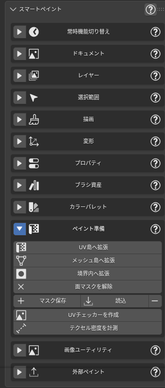
| 表示 | 働き |
|---|---|
| UV島へ拡張 | 選んでいる面から、UV がつながっている面まで面マスクを広げます。スマート UV 投影のように細かく分けた UV では、島が小さいため広がりも小さくなります。 |
| メッシュ島へ拡張 | 選んでいる面から、形としてつながっている面まで面マスクを広げます。 |
| 境界内へ拡張 | 選んでいる面から、指定した境目を越えない所まで広げます。押すと出る画面で、境目を「UV不連続」「シーム」「シャープ」「マテリアル」「法線角」から選べます。 |
| 面マスクを解除 | 面の選択を外し、面マスクを無効にします。 |
| マスク保存 | 今の面の選択に名前（「マスク名」）を付けて、.blend の中に保存します。 |
| 読込 | 保存した面マスクを選んで、面マスクとして読み込みます。 |
| 保存面マスクを削除（－） | 選んだ保存済みの面マスクだけを消します。 |
| UVチェッカーを作成 | 今の描く画像は変えずに、UV の歪みを確かめるための市松模様の新しい画像を作ります。 |
| テクセル密度を計測 | UV と画像の大きさから、1 メートルあたりのピクセル数（px/m）と「UV被覆」（画像のうち UV が使っている割合）を測って表示します。何も変えません。 |
実例選んだ面からつながる部品だけを選ぶ「メッシュ島へ拡張」（スザンヌで試した様子）
面マスクを使うと、選んだ面にだけ塗れます。「メッシュ島へ拡張」は、選んだ 1 つの面から、形としてつながっている面まで選択を広げます。図は、選んだ所が見やすいようにオレンジ系で塗ってあります。
- テクスチャペイントモードで面マスクを有効にし、目の面を 1 つ選ぶ
- 「Smart Paint」タブ ＞「ペイント準備」を開く
- 「メッシュ島へ拡張」を押す
見どころ：1 つだけ選んでいた目の面から、目の玉全体（顔とはつながっていない部品）まで選択が広がりました（濃い色の所）。この後は目の玉にだけブラシが塗れ、顔にはみ出しません。
実例UV のまとまりごとに選ぶ「UV島へ拡張」（スザンヌで試した様子）
「UV島へ拡張」は、選んだ面から、UV がつながっている面まで選択を広げます。服の部品ごとに塗りたい時などに使います。図は、選んだ所が見やすいようにオレンジ系で塗ってあります。
- テクスチャペイントモードで面マスクを有効にし、面を 1 つ選ぶ
- 「Smart Paint」タブ ＞「ペイント準備」を開く
- 「UV島へ拡張」を押す
見どころ：1 つの面から、同じ UV 島の面まで選択が広がりました（濃い色の所）。つながりは形ではなく UV で決まります。スマート UV 投影のように細かく分けた UV では、島が小さいので広がりも小さくなります。
5-11. 画像ユーティリティ
画像を加工します。どれも元の画像は変えず、新しい画像として作ります。できた画像は、画像エディターの画像の一覧から選んで見ます。最新の画像の名前は、パネルのいちばん下に出ます。画像エディターと UV エディターだけで使えます。
場所「ペイント準備」の下（最初は閉じています）
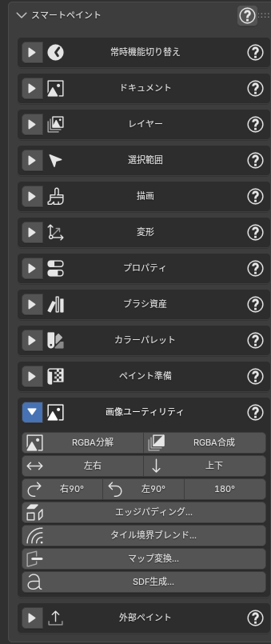
| 表示 | 働き |
|---|---|
| RGBA分解 | 画像を R・G・B・A の 4 枚の白黒画像に分けます。 |
| RGBA合成 | 直前に分けた 4 枚から、1 枚の画像を作ります。 |
| 左右／上下 | 画像を左右、または上下に反転した画像を作ります。 |
| 右90°／左90°／180° | 画像を回転した画像を作ります。 |
| エッジパディング... | 透明な部分に、近くの色を広げた画像を作ります（「半径」「透明しきい値」を設定）。透明さは変えず色だけを広げるので、画像エディターでの見た目は変わりません。継ぎ目のすき間対策に使います。 |
| タイル境界ブレンド... | 画像の反対側の端どうしをなじませた、並べてもつながる画像を作ります（「方向」「ブレンド幅」を設定）。 |
| マップ変換... | 「ノーマル OpenGL ↔ DirectX」（ノーマルマップの緑を反転）か「ラフネス ↔ スムースネス」を選んで変換します。入力は Non-Color の画像だけです。 |
| SDF生成... | 「アルファ」か「輝度」（「境界ソース」）の境目から、境目までの距離を表す画像（SDF）を作ります（「しきい値」「距離幅」を設定）。 |
| いちばん下の画像の名前 | 処理の後に出ます。最後に作られた画像の名前です。画像の一覧では、この名前を選びます。 |
実例絵の周りへ色を広げる「エッジパディング...」（サンプルで試した様子）
透明な所に、近くの色を広げた新しい画像を作ります。透明さ（アルファ）は変えず、色だけを広げます。テクスチャの継ぎ目にすき間が見える時の対策です。
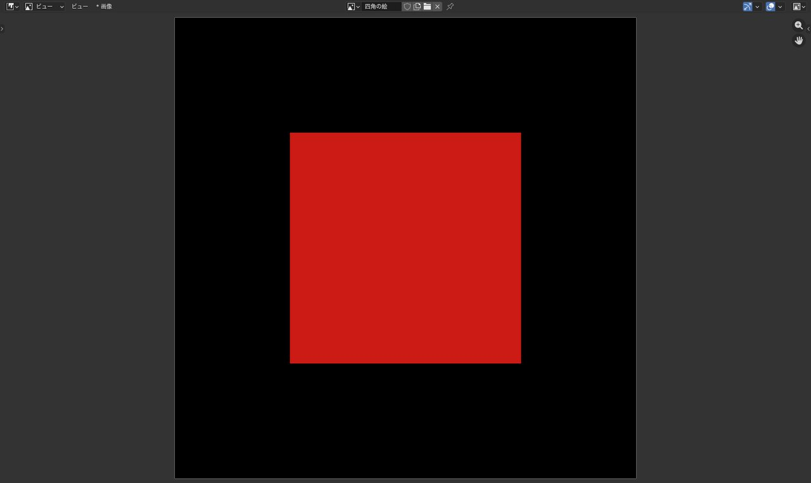
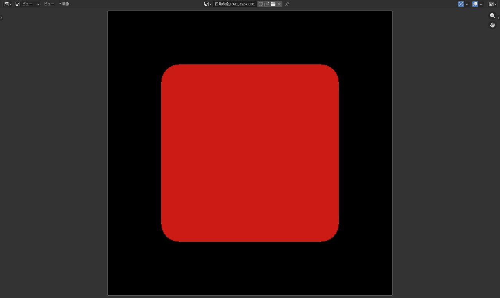
- 画像エディターで画像を表示する
- 「Smart Paint」タブ ＞「画像ユーティリティ」を開く
- 「エッジパディング...」を押し、「半径」を決めて OK を押す
- できた新しい画像を画像エディターの画像の一覧から選ぶ
見どころ：赤い四角の周りの黒かった所へ、赤が広がりました。透明さは変わらないので、ふだんの画像エディターの見た目は前と同じです。図は、広がった色が見えるように透明さをなくして写しています。元の画像は変わりません。
実例形から距離の画像を作る「SDF生成...」（サンプルで試した様子）
絵の境目から、各ピクセルまでの距離を明るさで表した新しい画像（SDF）を作ります。
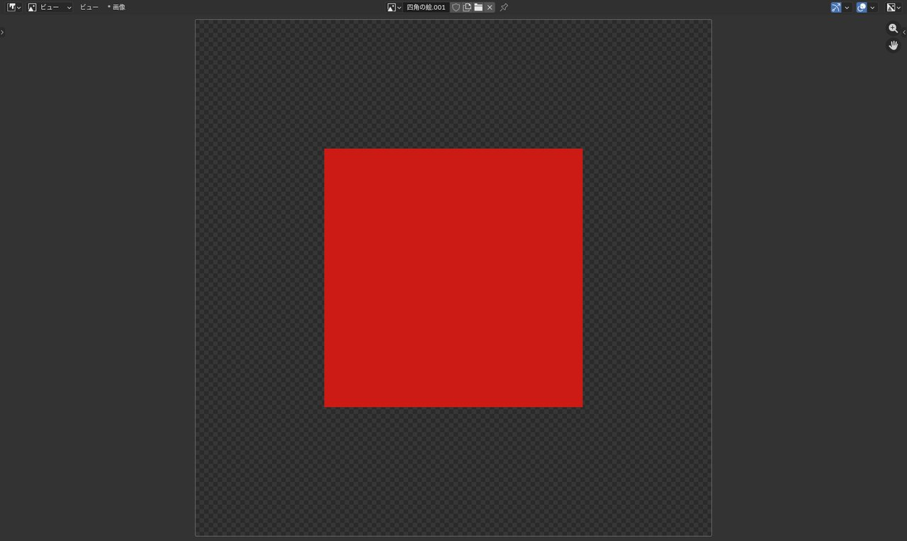
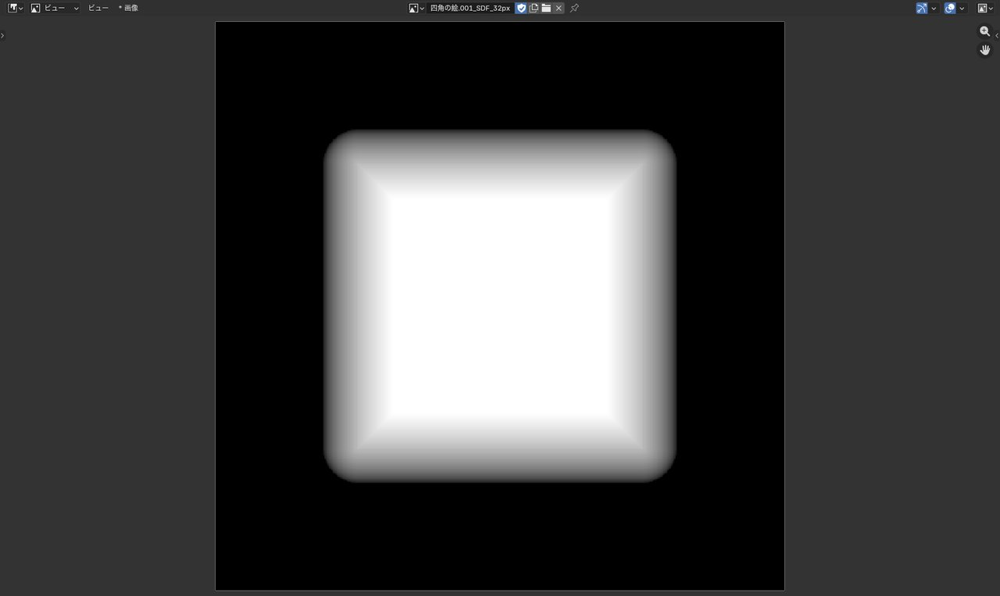
- 画像エディターで画像を表示する
- 「Smart Paint」タブ ＞「画像ユーティリティ」を開く
- 「SDF生成...」を押し、「境界ソース」（図では「アルファ」）と「距離幅」を決めて OK を押す
- できた新しい画像を画像エディターの画像の一覧から選ぶ
見どころ：四角の境目が中間の灰色になり、内側へ行くほど白く、外側へ行くほど黒くなる画像ができました。元の画像は変わりません。
5-12. 外部ペイント
Photoshop または Clip Studio Paint と、描いている画像をやり取りします。この見出しを開いただけでは連携は始まりません。
場所Smart Paint タブのいちばん下の見出し（最初は閉じています）
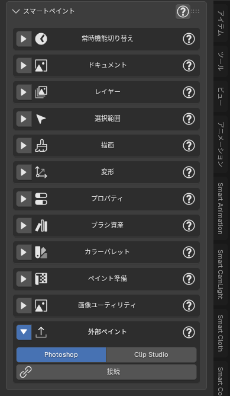
| 表示 | 働き |
|---|---|
| Photoshop／Clip Studio | やり取りするアプリを選びます。 |
| 接続 | 選んだアプリとの連携を始めます。 |
| 同期 / 開く | 接続した後に出ます。受け取り待ちの変更をもう一度取り込み、相手のアプリで交換用のファイルを開くか前に出します。 |
| 切断（×） | 連携を止めます。 |
そのほかの画面
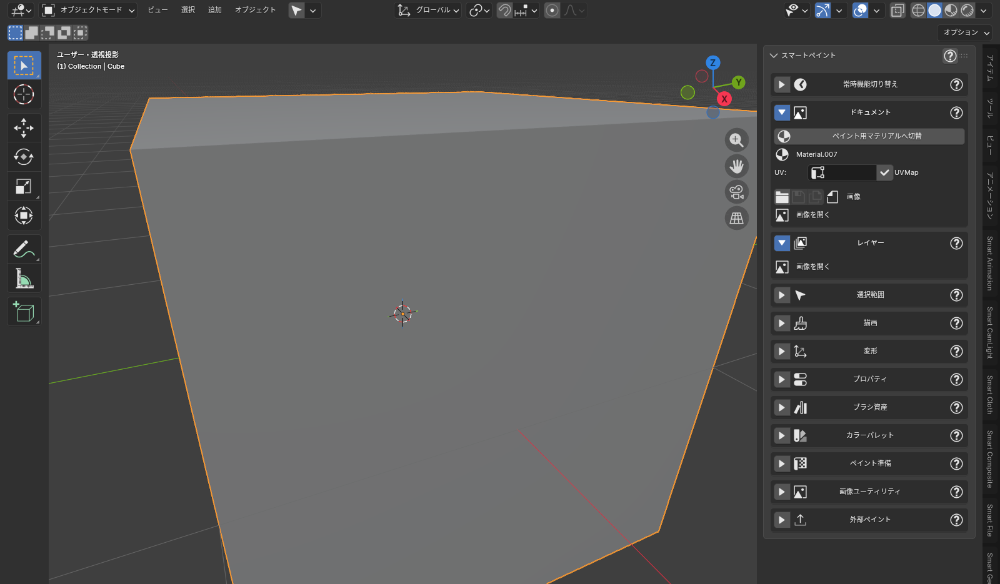
6. よく使う手順
切り替えてすぐ描き、PSD に保存する
画像を用意しなくても描き始められ、描いた絵をファイルに残せます。
- 3D ビューで、UV マップのあるメッシュを選びます。
- 「ドキュメント」の「ペイント用マテリアルへ切替」を押します。無地のレイヤーが用意され、テクスチャペイントモードに入ります。
- ブラシで描くか、「描画」の「塗りつぶし」で塗ります。
- 重なった四角のアイコン（「画像を別名保存」）を押し、名前の最後を .psd にして保存します。
- 続きを描いたら、フロッピーディスクのアイコン（「画像を保存」）で上書き保存します。
結果：PSD がこの文書の元のファイルになります。ファイルに書き出さなくても、.blend を保存すれば絵はその中に残ります。
PSD を開いてレイヤーに描き、保存する
PSD のレイヤー構造を保ったまま、一部のレイヤーに描き足します。
- 3D ビューで、描きたいメッシュを選びます。
- マテリアルが付いていない時や元のマテリアルを残したい時は、「ドキュメント」の「ペイント用マテリアルへ切替」を押します。
- 「ドキュメント」のフォルダーのアイコン（「画像を開く」）を押し、PSD を選びます。切り替えた時に用意された無地のレイヤーは、PSD のレイヤーに置き換わります。
- 「レイヤー」の一覧で、描きたいレイヤーの行を押します。
- Blender 標準のテクスチャペイントモードにして、ブラシで描きます。
- 全体の見た目を見ながら描きたい時は「ライブ」を押します。
- フロッピーディスクのアイコン（「画像を保存」）で保存します。
結果：描いたレイヤーが変わり、PSD のレイヤー構造はそのまま保存されます。
調整レイヤーで色味だけを変える
元の絵を変えずに、色味を試します。
- 「レイヤー」の一覧で、色味を変えたいレイヤーを選びます。新しい調整レイヤーはその上に入ります。
- 色のアイコン（「調整レイヤーを追加」）を押し、「種類」で「色相 / 彩度 / 明度」などを選んで OK を押します。
- 「プロパティ」を開き、「色相」「彩度」「明度」などの値を動かします。全体の見た目は「確認」で確かめるか、「ライブ」を押して確かめます。
- やめたい時は、一覧の目のアイコンで調整レイヤーを非表示にするか、調整レイヤーを選んで「－」（「レイヤーを削除」）で消します。
- ファイルに残す時は「画像を別名保存」で PSD にします。調整レイヤーと値も PSD に入り、値を変えた後は「画像を保存」で上書きできます。
結果：下のレイヤーの見た目だけが変わり、元の絵は残ります。
選択範囲の中だけを塗りつぶす
- 画像エディターを開き、その N パネルの「Smart Paint」タブを使います。
- 「選択範囲」を開き、「置換」を選びます。
- 矩形のアイコンを押し、画像の上でドラッグして範囲を作ります。
- 「描画」を開き、色と「A」を決めて、色のアイコン（「塗りつぶし」）を押します。
- 終わったら「×」（「選択を解除」）を押します。
結果：選んだ範囲の中だけが塗られます。失敗した時は「編集を元に戻す」で戻せます。
服の UV 島だけに塗れるようにする
はみ出さずに、一部の面だけに描きます。
- 3D ビューのテクスチャペイントモードで、Blender 標準の面マスクを使い、塗りたい所の面を 1 つ選びます。
- 「ペイント準備」を開き、「UV島へ拡張」を押します。
- あとで使い回す時は「マスク保存」で名前を付けて保存します。
- 塗り終わったら「面マスクを解除」で外します。
結果：その UV 島の面だけにブラシが効きます。
ノーマルマップの OpenGL／DirectX を変換する
- 画像エディターで、変換したいノーマルマップ（Non-Color の画像）を表示します。
- 「画像ユーティリティ」を開き、「マップ変換...」を押します。
- 「ノーマル OpenGL ↔ DirectX」を選んで OK を押します。
結果：緑のチャンネルを反転した新しい画像ができます。元の画像は変わりません。
7. 困った時
- 「3Dビュー・画像・UVエディターで使えます」と出て使えません。
- 「レイヤー」「選択範囲」「描画」「変形」「プロパティ」は、3D ビュー・画像エディター・UV エディターの N パネルでだけ使えます。そのほかのエディターでは、この文が出て中身は使えません。
- 「メッシュのマテリアルを選択」「メッシュオブジェクトを選択」と出ます。
- 3D ビューで、メッシュを選んでください。マテリアルが無い時は「ペイント用マテリアルへ切替」を押してください。
- 「確認」にしたら描けなくなりました。
- 「確認」は全体を見るための閲覧専用の表示です。描く時は「個別」か「ライブ」に戻してください。
- 「消去結果は確認モードで確定」と出ました。
- 「ライブ」の表示で不透明な所を消した時に出ます。「確認」を押して、全体の見た目で確かめてください。
- 「UVマップがありません」と出ます。
- その物に UV マップがありません。先に UV を作ってください。UV マップが無いと「ペイント用マテリアルへ切替」も使えません。
- 選択範囲やグラデーションのボタンを押しても始まりません。
- これらは画像の上でドラッグする操作なので、画像エディターの Smart Paint タブから押してください。3D ビューからは始められません。
- 元のマテリアルは書き換わりますか。
- 「ペイント用マテリアルへ切替」は元のマテリアルを保存したまま切り替えます。「元のマテリアルへ戻す」で元に戻せます。
- 「ペイント準備」や「画像ユーティリティ」が押せません。
- 「ペイント準備」は 3D ビューだけ、「画像ユーティリティ」は画像エディターと UV エディターだけで使えます。ほかの画面では「3Dビューで使えます」「画像・UVエディターで使えます」と出ます。
- 「外部ペイント」を開くだけで、裏で連携が始まりますか。
- 始まりません。「接続」を押した時だけ始まります。
- 「編集を元に戻す」で、ブラシで描いた線も戻りますか。
- このボタンが戻すのは、塗りつぶしや変形などの SmartPaint Suite の編集です。
- 「ライブ」を押すと「ライブ合成を使えません」と出ます。
- 理由の文のとおりにレイヤーやファイルを直すか、「確認」で全体を見てください。
- 切り替えて描いた絵は、どこに保存されますか。
- 元のファイルがない間は、.blend を保存するとその中に残ります。ファイルにしたい時は「画像を別名保存」で PSD や PNG に書き出します。PSD はそのまま続きを上書き保存できますが、PNG などはコピーを書き出すだけで、文書の元のファイルにはなりません。
- 別の物に移って戻ったら、ブラシの描く先がおかしくなりました。
- 別の物に移ったら、ブラシで描く前に「レイヤー」の一覧でレイヤーを選び直してください。
- 「エッジパディング...」をかけても、見た目が変わりません。
- 透明さは変えず、透明な所の色だけを広げるためです。できた新しい画像をテクスチャに使うと、継ぎ目のすき間が目立たなくなります。
- 「－」を押すと「最後のペイントレイヤーは削除できません。」と出ます。
- 文書に残っているペイントレイヤーが 1 枚だけで、そのレイヤーを選んでいる時に出ます。ペイントレイヤーは最低 1 枚必要です。調整レイヤーなら、ペイントレイヤーが 1 枚でも削除できます。
- 「ライブ」にしたら 3D ビューで物が真っ白になりました。
- まだ何も描いていない透明なレイヤーしかない時は、白く出ます。描くか「塗りつぶし」を押すと、その色で出ます。
アドオンが出ない・日本語にならない、など全部のアドオンに共通のことは、全体仕様書の「困った時」を見てください。
8. 用語集
- テクスチャペイント
- 3D の物や画像に、ブラシで直接色を塗る Blender 標準の機能です。
- PSD／PSB
- Photoshop の画像形式です。レイヤーの情報を持てます。PSB は大きな画像用です。
- レイヤー
- 透明なシートを重ねるように、絵を層に分ける仕組みです。
- 調整レイヤー
- 絵を持たず、下のレイヤーの色味だけを変えるレイヤーです。
- マスク
- レイヤーのどこを見せて、どこを隠すかを白黒で決める画像です。
- クリッピング
- すぐ下のレイヤーの描かれている所だけに、上のレイヤーを表示することです。
- 合成モード
- レイヤーを下にどう重ねるか（乗算・スクリーンなど）の決まりです。
- ライブ合成
- 3D ビューで全レイヤーを重ねた見た目を表示しながら、選んだレイヤーに描く表示のしかたです。
- UV／UV 島
- UV は 3D の面と画像の位置の対応表です。UV 島は、UV の上でつながっている面のまとまりです。
- 面マスク
- 選んだ面にだけブラシが効くようにする Blender の機能です。
- テクセル密度
- 3D の物の 1 メートルあたりに、画像の何ピクセルが使われているかです。
- エッジパディング
- 絵の外の透明な所に色を広げて、継ぎ目にすき間が見えないようにする処理です。
- SDF
- 各ピクセルから境目までの距離を明るさで表した画像です。
- ノーマルマップ（OpenGL／DirectX）
- 面の凹凸を色で表す画像です。緑の向きが 2 つの流儀で逆になっています。
- Non-Color
- 色ではなくデータとして扱う画像の設定です。ノーマルマップなどに使います。
- GBR／GPL
- GBR は GIMP のブラシ、GPL は GIMP のパレットのファイル形式です。
- ブラシ資産
- 保存して、ほかのファイルでも使い回せる Blender のブラシです。
9. 付録：版と確認値・できないこと
| アドオン | SmartPaint Suite（smart_paint_suite） |
|---|---|
| 版 | 1.0.0 |
| ZIP | SmartPaintSuite_1.0.0.zip |
| 大きさ | 976,006 バイト |
| SHA256 | 2d2fc5d38cea71c2901f4b41ce4fb6e7c332579934ff5551c455697d3d2da521 |
できないこと・注意
- 「レイヤー」「選択範囲」「描画」「変形」「プロパティ」は、3D ビュー・画像エディター・UV エディターでだけ使えます。
- 選択範囲を作る操作とグラデーションは、画像エディターの画像の上でドラッグして行います。
- 「ペイント準備」は 3D ビューだけ、「画像ユーティリティ」は画像エディターと UV エディターだけで使えます。
- 「ペイント用マテリアルへ切替」は、UV マップを持つメッシュでだけ使えます。
- 「確認」の表示は閲覧専用で、描けません。
- 選択範囲は PSD には保存されません。
- 「編集を元に戻す／編集をやり直す」が扱うのは、SmartPaint Suite の編集（塗りつぶし・消去・グラデーション・変形・貼り付けなど）です。
- 「画像ユーティリティ」はどれも新しい画像を作ります。元の画像は変わりません。
- 「マップ変換...」の入力は Non-Color の画像だけです。
- 調整レイヤーとして追加できる種類は、「明るさ / コントラスト」「レベル」「色相 / 彩度 / 明度」「カラーバランス」「反転」「ポスタライズ」「しきい値」「グラデーションマップ」の 8 つです。それ以外の調整が PSD に入っていると、「Photoshop/CSPのネイティブ記録を保持」と表示され、値の欄は出ません。
- 「外部ペイント」の「接続」は、SmartPaint Suite で開いた画像のファイルがディスクにある時に使えます。相手のアプリ（Photoshop または Clip Studio Paint）も必要です。また、Blender の Python に psd-tools と Pillow が入っている必要があります（Blender には入っていません）。入っていない時に「接続」を押すと、「外部ブリッジには Blender の Python 環境に psd-tools と Pillow が必要です。」と出て、連携は始まりません。
- 別の物に移った時は、ブラシで描く前に「レイヤー」の一覧でレイヤーを選び直してください。
- 「SDF生成...」などの画像の加工は、大きな画像で値を最大にすると時間がかかります（4096 px の画像で幅を最大にすると約 20 秒）。
- 文書に残っているペイントレイヤーが 1 枚だけの時、そのペイントレイヤーは削除できません（調整レイヤーは削除できます）。
- マスクを作れるのはペイントレイヤーとグループです。調整レイヤーには作れません。
SmartPaint Suite 解説書 v1.0.0 ／ 2026-11-18 作成